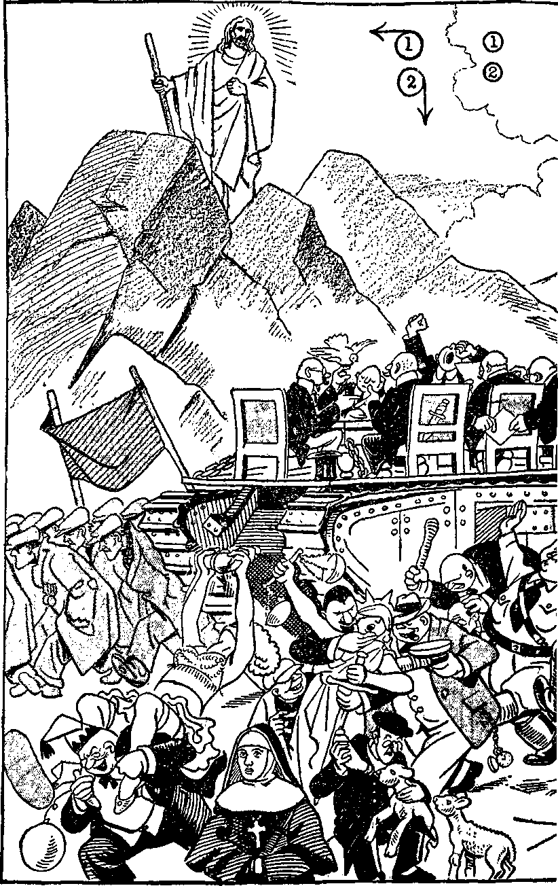

iiiiiiiiiiiiiiiiiiniiiiiiiiiigiiiiiiiiiiiiiiiiiiiiiiiiiiiiiiiiiiiiiiiiiiiiniii
in this issue
PROTEST
iiiiiiiiiiiiiiiiiiniiiiiiiiiigiiiiiiiiiiiiiiiiiiiiiiiimmiiiimiiiiiiiiiiii
every other
WEDNESDAY
five cents a copy one dollar a year Canada & Foreign 1.25
Vol. XV - No. 385 June 20, 1934
CONTENTS
- .Qx»-
LABOR AND ECONOMICS
The Laundry Code......591
Burning Blue Grass Seed . . . 59G
The Wheat Producer and
the Bread Eater......596
Topsyturvydom (Poem) .... G07
SOCIAL AND EDUCATIONAL
Insurance Against Conscription . 590
Origin of Curious Customs . . . 594
Man-W omnn-Y oke-Going-
Egypt-East.......594
Advice to Young Lawyers . . . 594
Another Diploma from
Exposition at Paris .... 598
MANUFACTURING AND MINING
Labor Cost of Merchandise . . . 596
FINANCE—COMMERCE—TRANSPORTATION
Work of a Clever Lawyer . . . 591
Railroads in a Bad Way .... 591
Bank Loans for Slock Speculations 591
The Du Pont Prosperity . . . 591
POLITICAL—DOMESTIC AND FOREIGN
Protest..... 579
Germany Gave Up as Much as America.....590
Internment on Italy’s Penal Islands 590
AGRICULTURE AND HUSBANDRY
Millions of Farmers Not Needed . 596
Kindness to Wild Life .... 596
An Early Spring in Tacoma . . 596
SCIENCE AND INVENTION
Hard Times Bring More Boys . . 595
New Uses for Aluminum . . . 596
HOME AND HEALTH
89,500 Died in Accidents in 1933 . 594
Catherine Brickland Dead at 123 . 594
The Care of the Sick.....595
Tonsillectomy May
Cause Ear Trouble.....595
Off Caffeine Drinks for Life . . 595
TRAVEL AND MISCELLANY
Cement at $30,000 a Keg , . . 591 New Highway Link
in South America.....591
Price of Baby Girls in China . . 594
German Women May Smoke . . 595
Last Winter in New England . . 596
Cause of Hindu Earthquake . . 596
RELIGION AND PHILOSOPHY
Demonism in West Virginia . . 589 “Holy Door” Is Closed .... 592 A Few Pontifical Suggestions . . 592 If Christ Came Back (Cartoon) 592 Rebellion.........597
Letters Received at Paris . . 598 David’s God (Poem).....G01
The Sabbath Day : a Past Shadow 602 Toronto Convention.....607
--
Published every other Wednesday by
GOLDEN AGE PUBLISHING COMPANY, INC.
117 Adams Street, Brooklyn, N. Y., U. S. A.
Clayton J. Woodworth President Nathan H. Knorr Vice President
Charles E. Wagner Secretary and Ticasuicr
FIVE CENTS A COPY
$1 a year, United States ; $1.25 to Canada and all other countries.
Notice to Subscribers remittances : For your own safety, remit by postal or express money order. When coin or currency is lost in the ordinary mails, there is no redress. Remittances troni countries other than those named below may be made to the Brooklyn office, but only by international postal money order.
receipt of a new or renewal subscription will be acknowledged only when requested. notice of expiration is sent with the Journal one month before subscription expires. Please renew promptly to avoid loss of copies.
change of address : Subscribers will please notify this office of change of address at least two weeks in advance.
published also in Danish. Dutch, Esperanto. Finnish, French. German, Greek, Japanese, Norwegian, Polish, Slovak, Spanish, Swedish.
Offices for Other Countries
British........34 Craven Terrace, London, W. 2, England
Canadian.......40 Irwin Avenue. Toronto 5. Ontario, Canada
Australasian .... 7 Beresford Road. StrathOeld, N. S. W., Australia South African ....... Boston House, Cape Town, South Africa
Entered as second-class matter at Brooklyn, N. Y., under the Act of March 3, 1879. ----—---
Volume XV Brooklyn, N. Y., Wednesday, June 20, 1934 Number 385
Protest
Against Enactment of Committee Substitute for Assembly Bill No. 272
Filed June 4, 1934, with chairman (William H. Albright) of judiciary committee of the senate of New Jersey
Charles B. Hessler, in behalf of himself and numerous other citizens of the State of New Jersey, PROTESTS dgainst the enactment of Assembly Bill No. 272, and as reasons therefor assigns the following:
My name is Charles R. Hessler, and I reside at 26 Brookside Avenue, Hawthorne, New Jersey. I am a citizen of the State of New Jersey, being a native-born American citizen.
In behalf of myself and many other citizens of the State of New Jersey protest is made against Assembly Bill No. 272.
Among the many objections to the proposed law I wish to name the following, and for convenience I set them out under five separate and distinct headings, to wit:
(1) It is entirely unnecessary.
(2) It affords a shield and protection for fraud, deceit and wrong-doing.
(3) It provides a penalty which is both cruel and unusual.
(4) It is destructive of the freedom of speech, freedom of press, and freedom of action.
(5) It is vicious, unfair, hypocritical, and begets meanness.
(1) NEEDLESS
The law of the State now in force provides adequate relief to those who have been slandered or libeled. Since a group of persons is made up of a number of individuals, what would afford a remedy for one person would also afford an adequate remedy for any number of persons who make up that group. There could not exist a real necessity for- the proposed law, and no just grounds can be assigned for the same.
B70
(2) DECEITFUL
The purpose of this new brand of libel law as announced by its proponent is misleading and therefore deceitful. Its purpose is not to protect the citizens of New Jersey from libel and slander, but is to punish citizens who dare to publish the truth of and concerning a creed or practice promulgated and indulged in by a group of persons, which creed and practice may be extremely vicious and detrimental to the public welfare.
Otherwise stated, a group of persons may form themselves into an association in New Jersey, promulgate their creed which provides for indulging in certain practices, and claim the same to be religious and label it as such, and regardless of the morality or immorality of such creed and practice no person would be permitted to speak or publish the truth of and concerning such creed, teachings, doctrines and practices. The bill therefore protects wrong-doing and prevents right-doing.
To illustrate: Under protection of such a law a group of persons could promulgate a creed or statement of their belief and rules and forms of worship and proceed to carry out the same, which creed and rules of worship might provide that worshipers appear nude and indulge in practices now well defined as immoral.
If a person or newspaper should publish the truth of and concerning the teachings of such group, their creed and their practices, that statement or publication would necessarily subject such group to shame, ridicule, disgrace and contempt, and the person so publishing the truth would be subject to a severe penalty.
The law, therefore, would shield, protect and connive at fraud, fraudulent practices and indecent conduct, and would do so because of the claim that such practices and conduct are “religious”.
As a striking illustration, we cite the Divine Record at Numbers 25:1-5. The Israelites or Jews were God’s covenant people. Neighboring nations indulged in Baal worship, and many of the Israelites adopted the Baal worship, and particularly that known as Baal-peor. By the terms of that religious creed and practice the worshipers performed their religious ceremony with lewd and immoral women, as it is written:
“And Israel joined himself unto Baal-peor: and the anger of the Lord was kindled against Israel. And the Lord said unto Moses, Take all the heads of the people, and hang them up before the Lord against the sun, that the fierce anger of the Lord may be turned away from Israel. And Moses said unto the judges of Israel, Slay ye every one his men that were joined unto Baal-peor. ’ ’—Numbers 25:1-5.
If a similar practice should be indulged in anywhere in the State of New Jersey and a criticism made thereof, the one so criticizing would be guilty of a misdemeanor under the proposed law. Thus the law would protect immorality and indecency.
Furthermore, the bill proposed makes it a misdemeanor punishable by fine and imprisonment for any person to publish facts which would subject a group or groups of persons to shame, ridicule, contempt or hostility by reason of their religion, creed or manner of worship, regardless of whether the practices are right or wrong according to the standard of the Word of Almighty God concerning which the Constitutional provision specifically applies.
In this connection we call attention to the fact that the Constitution of the State of New Jersey provides that “No person shall be deprived of the inestimable privilege of worshiping Almighty God in a manner agreeable to the dictates of his own conscience.”
But there is a vast difference between the worship of Almighty God and the practice of religion; and this is strongly emphasized in the foregoing example concerning the devil worship or the devil religion of Baal-peor.
We emphasize the provision of the Constitution that every man is free to worship Almighty God according to the dictates of his own conscience, but that does not mean that he is free to worship the Devil under the form of religion, which worship would be immoral and in violation of all the rules of common decency.
As a further illustration, let us suppose that a religious group promulgates a creed and form of worship which provides that the one ministering can pray, supposedly to God, to relieve the “soul” of one who has died from a condition of torment, and that the condition upon which such prayer is to be made is that the one making the prayer must receive a sum of money from the surviving relatives of the deceased. Should anyone call attention to God’s Word, showing that such religion and practice is contrary to God’s Word and is a form of devil worship and is a fraud upon the people, that would certainly hold up the group to contempt, ridicule and hostility, and yet it would be the truth, for the reason that God’s Word expressly states that when a man is dead the prayers in his behalf can avail nothing and that no one has authority, right or power to justly receive money at the hands of a living person to utter prayers in behalf of one who is dead.
If this bill should become a law, then everybody would be compelled to acquiesce or subscribe to or at least remain silent as to the doctrines of any institution that parades under the name and form of religion, and which group of persons might be doing so wrongfully and obtaining money under false pretense.
If a group of persons is teaching the truth, then there could be no objection to an honest, constructive criticism of the creed or practices of such a group.
There could not exist any reason to safeguard by law true worship of Almighty God from slander or libel, because that which is true, and hence in harmony with Jehovah God’s Word, is open to the most searching criticism and is certain always to emerge from such criticism entirely unscathed.
Only teachers and practitioners of a false religion would desire the protection that the proposed bill would afford.
There are within the borders of the State of New Jersey religious groups that hold diverse views. For instance, the creed of one is that when a man dies, that is the end of him and there is no hereafter. Whereas, another group, according to its creed and its practice of religion, holds that when a man dies he does not in fact die but is alive and goes either to heaven or to a place of eternal torment called hell.
According to the terms of this bill, if any person should call in question or criticize either one of these groups and should speak or publish a statement appearing in God’s Word showing that such creeds are wrong, the truth would tend to hold such teachers and practicers of error up to ridicule, scorn, contempt and shame, and hence the one speaking or publishing the truth would be guilty of a misdemeanor.
On the face of it, this bill prevents freedom of speech and protects error and fraudulent practices.
There is another group of religionists, who have promulgated a creed and who practice their religion, claiming that a person who is sick and afflicted may be healed merely by the prayers of another imperfect human creature; and at the same time there are many honest people who do not agree with such creed or practice. But any honest and constructive criticism of such creed and practices made by any individual would subject him to heavy punishment regardless of whether his criticism is true or false.
According to the terms of this bill, if it should become a law, any group of persons could promulgate, teach and practice a creed under the form of religion and do so with impunity regardless of the detrimental effect it would have on the general public, and no one would have any right to call in question their practices, which might be very degrading and harmful.
(3) CRUEL
The bill is violative of the fundamental law of the State in this, that it provides for cruel and unusual punishment. Any act committed which is prohibited by the bill subjects the offender to the punishment of both a fine of five thousand dollars ($5000) and imprisonment for five years for the heinous crime (?) of telling the truth.
In support of this, attention is called to the facts hereinafter set out under points 4 and 5.
(4) DESTRUCTIVE
The proposed law would destroy freedom of speech, freedom of press, and the reasonable use of radio broadcasting stations, radio receiving sets, transcription machines and phonographs, even though the use thereof would be of public interest, convenience and necessity.
I beg to emphasize the fact that the preamble to the proposed law is not a fair presentation of the facts as they exist. The Constitution of the State of New Jersey does not guarantee freedom to practice any and all kinds of religion, but it does guarantee and provide that “no person shall be deprived of the inestimable privilege of tvorshiping ALMIGHTY GOD in a manner agreeable to the dictates of his own conscience”.
There is as much difference between the “worshiping of Almighty God” and the practice of religion as there is between day and night.
Under Paragraph 2 of the proposed bill any person residing either inside or outside of the State of New Jersey who would print, multigraph, or in any other manner produce a book, speech, article, statement, circular or pamphlet which would in any way subject to prejudice, shame, disgrace, contempt or hostility any group of persons residing in the State of New Jersey, by reason of their religion, creed or manner of worship, would be subject to severe punishment. Such a law would be an absolute denial of the freedom of press or other means of publication. It might become very necessary to publish the truth of and concerning a certain creed or religious worship in order to protect the general interest of the people. Under the proposed law a group of persons could indulge in any kind of improper practice under the name of a religion carried out according to their announced creed, and could do so with impunity, because no one would be permitted to publish the truth concerning the same.
There are “religionists” who, acting under a stated creed, indulge in human sacrifice, and it is barely possible that such might set up that kind of religion in New Jersey, and, if so, the public press would not be permitted, under the proposed law, to even call attention to such wrongful practice, for the reason that speaking or publishing the truth of and concerning the same would subject such group of persons to prejudice, shame, hatred, ridicule, disgrace, contempt and hostility, and rightfully so.
Under Paragraph 3 of the proposed law, any person having in his possession and exhibiting or attempting to exhibit to another any book, speech, article, statement, circular, pamphlet, or other written or printed matter which would in any way subject to prejudice, shame, hatred, disgrace, contempt or hostility any group of persons residing in the state, by reason of their creed or religion, the one so having in possession would be subject to severe punishment.
I beg to remind this Committee that under this section of the proposed law if any person should be found in the State of New Jersey with a Bible opened at the twenty-third chapter of Matthew and pointing out to another the language of Jesus therein printed and which He spoke against the priests and Pharisees of His day, and if such person should say to another that the words of Jesus apply with equal force to certain religious practitioners of the present time in New Jersey, the person so having the Bible and thus exhibiting it would be guilty of a violation of this proposed law and subject to severe punishment by fine and imprisonment. The proposed bill therefore denies the right of a man to exhibit to his neighbor the truth as set forth in the Bible and to make effort to aid his neighbor to understand the Bible statements and their application to the present time. It is amazing that in this Twentieth Century any group of men would attempt to induce a legislative body to enact such a law as this bill proposes.
At once there is a suggestion to the mind that this proposed law originated with certain religious practitioners who desire to keep the people in ignorance of the truth of and concerning their own practices because the truth thereof would tend to hold them up to shame, ridicule and contempt. This law, then, would afford a shield to wrong-doers rather than to prevent wrong’s being done. Aside from professional religionists, I ask you, who would be interested in having such a law put upon the statute books of this state ?
Paragraph 4 of this bill would make it a crime for any person to exhibit any picture or photograph made of a group of persons while actually committing a shameful deed, provided that shameful deed is committed in the name of religion. The camera produces a thing as it is, and hence speaks the truth, and the making or exhibiting of such photograph would disclose the truth, and which truth would cause the group of persons there exhibited by the photograph to be brought into shame and contempt; hence a person making known the truth would be committing an offense. Such a law is unreasonable and against public policy.
My own personal experience may have prompted the insertion of Paragraph 4 in this bill, relative to photographs. On June 4, 1933, sixty faithful men and women, who were exercising their Constitutional rights in “worshiping Almighty God”, were wrongfully arrested and placed in jail at the city of Plainfield, New Jersey, where they were held in jail under an ordinance, which ordinance was afterward (by the Court of Common Pleas of Union County) declared invalid. In order that I might have the indisputable facts, which a photograph would bespeak, I engaged a photographer to make a photograph of the prisoners, twenty-nine of whom were women and held in three small cells, and who had been arrested and incarcerated at the instance of certain religionists. While the photograph was being taken the captain of police caused the taking of the photograph to be interrupted, and for the taking of the photograph I was arrested and immediately thrown into prison and subsequently tried, convicted and sentenced to pay a fine of $50 or to serve 60 days in jail. On appeal the Supreme Court reversed the judgment of conviction and discharged me. The truth disclosed by that photograph is what the religionists desired to suppress. If this bill should become a law and a citizen of New Jersey should have or exhibit this photograph he would be subject to severe punishment, even though the photograph tells the truth, which it does. I file a copy of the same as Exhibit A to this statement. *
Paragraph 5 of this remarkable bill would make it a misdemeanor for any person in the presence of two or more persons to speak in any language or make any statement or declaration which in any way would shame, ridicule, disgrace, or bring into contempt or hostility a group of persons by reason of their religion, creed or manner of worship even though the creed, religion or manner of worship should be grossly in violation of common decency and laws of the land which have long been upon the statute books. The proposed law, therefore, would be a complete denial of the freedom of speech even where the speaking of the truth would be necessary for the benefit of the public in general.
Paragraph 6 would punish by fine and imprisonment the owner of a house or other building who would let or hire the same or any part thereof for the use of an association or society of persons in which should be held a meeting of two or more persons wherein any speech should be made, photograph exhibited, paper * See Golden Age No. 361, July 19, 1933, pages 656-657. read, book or other paper exhibited, which would have the tendency to subject to shame, ridicule, disgrace, contempt, or hostility any group of persons practicing an indecent religion according to their creed or manner of worship.
Paragraph 7 of the proposed law would prevent the owner, lessee, manager, or any other person in control of any building or structure to suffer or permit any organization to meet in that building, the constitution, by-laws or rules of which said organization might in any way-incite or subject any other group of persons residing in the state to prejudice, shame, ridicule, disgrace, or contempt by reason of religion, creed or manner of worship. It is a well known fact that for many years the numerous religious organizations in America have freely called attention to the creeds and practices of other organizations, and it would be an easy matter to induce an overzealous court or jury to believe that the purpose and intent of calling attention to the truth of such practices was to violate the law and thus would open the way for constant spying of one organization upon another, the tendency of which would be not only to destroy freedom of speech, but to increase hatred, ill-will and malice of one toward the other and cause the violation of the laws already on the statute books.
Paragraph 8 of the bill would prevent any radio station from using, or permitting the same to be used to broadcast in any language, any speech or declaration, regardless of how true the speech or declaration might be, which would prejudice or subject to shame, hatred, ridicule, disgrace, contempt, or hostility any group of persons because of their religion, creed or manner of worship. This paragraph would prevent any person within the State of New Jersey from using a radio receiving set, transcription machine, phonograph or any other means of reproducing speech which might be heard by other persons and which speech so reproduced would disclose the truth and which truth would tend to promote ridicule, disgrace or contempt of others, even though such others were engaged in a practice that would be entirely against the public interest.
For some time a strong religious organization in the United States has been carrying forward a vicious campaign to prevent the proper use of radio, as is evidenced by a printed copy of the proceedings before a Congressional committee at Washington which I file herewith and mark as Exhibit B. *
Every paragraph and provision and every portion of this proposed act is in derogation of the Constitution of the State of New Jersey and of the United States, and is therefore invalid, and the bill should be rejected as a whole.
I submit that before the lawmakers of this State should attempt to take away from the people freedom of speech and of press and put a gag in the mouth of every one who attempts to speak the truth and imprison those who speak the truth, the matter should be submitted to an open and free discussion of the people and let them determine whether they wish to thus be deprived of their just rights.
(5) HYPOCRITICAL
The proposed bill would beget habits of hypocrisy and meanness, in this, that it would shield all manner of false and fraudulent practices that might be operating under a creed and name of religion. Making it a criminal offense for a person to call attention to such hypocrisy and false practices is directly opposed to the underlying principles of the American government.
Centuries ago the attempt of professional religionists by temporal punishment to prevent citizens from speaking the truth and worshiping Almighty God in the manner which He has commanded was the moving cause for the forefathers to lay the foundations of this government on the bleak shores of New England. Appropriate hereto is the following quotation from the Constitution of the State of Rhode Island:
“Whereas Almighty God hath created the mind free; and all attempts to influence it by temporal punishments or burdens, or by civil incapacitations, tend to beget habits of hypocrisy and meanness; and whereas the principal object of our venerable ancestors, in their migration to this country and their settlement of this state, was, as they expressed it, to hold forth a lively experiment, that a flourishing civil state may stand and be best maintained with full liberty in religious concernments; we, therefore, declare that , . . every man shall be free to worship God according to the dictates of his own conscience, ...”
The Constitution of New Jersey is in complete accord with the foregoing and provides,
•"Hearings Before the Committee on Merchant Marine, Radio and Fisheries, House of Representatives, Seventy-third Congress, Second Session, on H.R. 7986" (226 pages).
“No person shall be deprived of the inestimable privilege of worshiping Almighty God in a manner agreeable to the dictates of his own conscience.”
The Constitution of the United States likewise provides for freedom of worship and freedom of press and speech. Religious institutions often attempt to prevent individual citizens from availing themselves of the benefits of these constitutional provisions.
The Constitution of New Jersey specifically mentions Almighty God and shows that the purpose thereof is to grant complete freedom to worship and serve Him.
Almighty God, as therein mentioned, is One whose name alone is Jehovah, the Most High over all the universe. (Exodus 6:3; Psalm 83:18) It is He who has appointed and anointed men and women to be witnesses in His name to tell others about His truth, His King and His kingdom, which is the only hope of the world. His great enemy and opposer is Satan, the Devil, who attempts to keep the people blind as to the truth. I mention this in order to enable us to determine just who is the primary mover in the effort to suppress freedom of speech and freedom of press concerning the truth, which truth might be inimical to the interests of certain groups practicing what they call religion.
For example: In the United States there is one religious institution definitely committed to suppression of freedom of speech on certain subjects. Safely ensconced in the cradle of liberty and granted greater freedom of action here than elsewhere in the world, it yet presumes to deny to others what was so cheerfully accorded. It is of record that that institution has officially denounced freedom of speech as a great error.
Not only does that powerful organization claim the right to do all the thinking and teaching on Biblical questions, but in effect it demands the right to censor all speeches on such subjects that go out over the radio; and wherever possible it has not hesitated to enforce that censorship.
In their published editorials, that organization’s most zealous agents claim to stand by the American principle of free discussion of subjects of public interest. At the same time they demand that they first have opportunity to scrutinize what shall be said. One’s natural reaction to such demands is to inquire, What is there about the beliefs and practices of an institution so inconsistent and unreasonable that it is unsafe for others to mention those beliefs and practices? Why not bring them out into the sunlight and fresh air of free discussion, to the lasting benefit of all concerned ?
Through the publications which it controls, that far-flung organization wields a mighty power over many in the State of New Jersey. Its spokesmen are prompt to say that it believes in freedom of speech, but that nothing must be said that will shock or wound the “religious susceptibilities” of members of their group. In the same breath, those speakers, through their publications, have spared no pains to call humble followers of Jesus Christ the vilest and most abusive names ever put in print.
One of those publications, commenting on a series of Bible-prophecy broadcasts of wide public interest, said: “What they peddle is plain nonsense, the same brand of nonsense you would expect from amateur doctors and amateur lawyers, if the laws would permit such a thing. Such amateurs in any line should be barred from the radio channels.”
In another instance a local society affiliated with that same strong and overzealous religious group went into raptures about democracy’s having received its inspiration from the Sermon on the Mount, and then wound up with a businesslike threat to the local department store’s broadcasting station that unless certain radio programs of Bible instruction disapproved by said society were canceled forthwith the store might expect members of the society to withdraw their accounts. Many similar cases of unjust interference with the rights of the people by that same aggressive and intolerant group of religionists are described in the report of hearings recently held by request of Congress, a copy of which report I offer in evidence as Exhibit C, marked pages 298 to 362, inclusive, and particularly page 316, paragraph 7. *
Examination of hundreds of publications issued by that old but very active ecclesiastical group reveals the interesting fact that the most vicious and horrible bigotry and intolerance are interlarded with extremely sanctimonious claims
* For the newest, and latest, * ‘ Hearings Before the Committee on Interstate and Foreign Commerce, House of Representatives, Seventy-third Congress, Second Session, on H.R. 8301” (363 pages) send money order immediately for 25c (stamps not accepted) to Superintendent of Documents, U. S. Government Printing Office, Washington, D. C. Order the report by its title.
of ultra-Americanism. This same principle of hypocrisy is discernible in the bill introduced for passage by this legislature. It might be justly charged against the authors of the bill that in instances where they claim to stoutly stand for liberty of speech they have shamelessly resorted to the most extravagant denunciation of those who ventured to disagree with them.
One could have a little confidence in the purpose of the authors of the bill if they had said openly, “We are dead set against the American doctrine of freedom of speech, and are out to put an end to it.”
With propriety the question might be asked, Where did this bill originate?
Certainly not in New Jersey. Manifestly it was conceived in malice and brought forth in iniquity at a point far removed from the State of New Jersey.
The true father of it is the Devil himself, who has at all times used religion and religious practices to oppress and degrade honest men and to defame the name of Jehovah God.
And now I respectfully propound this question:
Will the local sponsor of this bill who introduced it in the Assembly tell this Committee and the people of New Jersey that the bill was conceived in his own mind, or whether or not he received instruction from an undisclosed authority to have the bill enacted as law in this State to prevent criticism of the creeds and practices of a certain religious sect?
It is not without significance that a bill similar to the one offered for passage by the legislature of New Jersey is offered also in the legislature of New York, and simultaneously in legislatures of the provinces of Canada, also in Australia, in South Africa, and in the House of Commons at London. This fact of itself strongly suggests that the real sponsors of the bill introduced here are hiding behind some screen labeled “religion” but which is in fact the worst kind of politics.
It is also significant and worthy of consideration that the famous international leader of that prominent sect of “organized Christianity” has recently instructed his representatives in various countries to take all steps possible to prevent the proclamation of the message of God’s kingdom by Jehovah’s witnesses, and that this action has been simultaneously taken to prevent the broadcasting of that message in the following countries, to wit: Australia, South Africa, Japan, China, France, England, Canada and the United States.
And it is further significant that in pursuance of such attempts to prevent the distribution of the message of God’s kingdom many who deliver that message to the homes of the people have been arrested and imprisoned in the several countries just named; and in all those cases such arrests have been made at the instance of religionists.
These facts are cited to show the connection of this proposed modern libel law intended to protect and shield “religionists” that have persecuted and are persecuting inoffensive men, women and children who are exercising their Constitutional right of “worshiping Almighty God” in a manner agreeable to the dictates of their own conscience.
With permission of the Committee, I would like to call attention to another matter, and mark this as an exhibit [Exhibit G], in support of the argument concerning the religious group that is backing this bill. The sponsor of the bill, Mr. Rafferty, is an ardent Catholic. From Fitzgerald’s Manual of the State of New Jersey for 1934 I quote the following: “Mr. Rafferty is a member of Bishop McFaul Council Knights of Columbus, and of the State Council, Knights of Columbus.”
JEHOVAH’S WITNESSES
Within the State of New Jersey there are many persons who worship Almighty God in harmony with the Constitutional provision and with the commandments of the Almighty God. To worship the Almighty God Jehovah in truth and in spirit one must gladly obey His commandments as they are written in His Word the Bible. What is stated in the Bible is the truth, and it is THE TRUTH when spoken that subjects certain religionists to prejudice, disgrace and contempt, and necessarily it would be the religionists who would wish to prevent the speaking of the truth and to have a law with teeth in it in order to prevent the truth’s being told.
To obey and worship Jehovah God one must be a witness of Jehovah; and, as He has commanded, such witness must tell others about Jehovah God’s purpose. By telling the truth of God’s Word these witnesses are not speaking evil of persons, but are setting out the truth which is so necessary for the comfort and protection of the people. Among the commandments which Jehovah God has given to those who worship Him in spirit and in truth are these: “Ye are my witnesses, saith the Lord, and my servant whom I have chosen.” 'Go and tell the people.’ ‘This gospel of the Kingdom must be preached unto all nations as a witness, and then the end shall come.’—Isaiah 43:10,12; Isaiah 6:9; Matthew 24:14.
During the past four years in particular, within the borders of the State of New Jersey many of the true followers of Christ Jesus, who are therefore Jehovah’s witnesses, and who have been pursuing their Constitutional rights to worship Jehovah God, have been persecuted, arrested and thrown into prison, and in every case this has been done at the instance of certain religionists who are now anxious to have this bill become a law so that no one can then call in question their wrongful acts.
Those same religionists have attempted to prevent the owners of buildings from renting the same to Jehovah’s witnesses in which to hold meetings for Bible instruction, and they have caused the speaker at such meetings to be surrounded with a squad of men heavily armed for the manifest purpose of creating the impression that Jehovah’s witnesses are dangerous persons ; and this has been done in violation of the Constitution relative to peaceable assembly. These same religionists have caused the arrest of men, women and children, and their imprisonment and continued persecution, and have done so under the provisions of municipal ordinances which the higher courts of this State have declared invalid. I cite these facts to show actual malice which is held and manifested by those who are anxious to have this bill become a law.
And now for the information of this legislative body I attach a list of cases that have been brought in the courts of New Jersey, and the result thereof, as follows, to wit:
ARRESTS
Some of the many eases involving arrest and relentless persecution of Jehovah’s witnesses in the State of New Jersey during six-year period ending May 31, 1934. Thorough study of the Table and the Notes will prove useful to everyone.
TABLE
|
1928 |
(N) |
(d) |
(a) (D) | |
|
June 10 |
South Amboy |
61 |
f | |
|
Nov. 25 |
Bergenfield |
7 |
X |
s X |
|
Dec. 30 |
Englewood |
2 |
X |
S X |
|
1929 | ||||
|
Jan. 20 |
South Amboy |
99 |
m | |
|
1931 | ||||
|
Oct. 12 |
Bergenfield 1) |
2 |
X | |
|
Nov. 4 |
1 |
X |
c f | |
|
1932 | ||||
|
Jan. 24 |
Bergenfield |
10 |
X |
C 0 |
|
Feb. 21 |
Asbury Park |
4 |
X |
C 0 |
|
Mar. 27 |
f > > > |
1 |
X |
V f |
|
Apr. 30 |
Bergenfield |
9 |
X |
c f |
|
May 22 |
>> |
31 |
2X |
s f |
|
” 22 |
Englewood |
2 |
X |
c f |
|
June 20 |
Westfield |
10 |
X |
c 2f |
|
” 25 |
} J |
4 |
m | |
|
” 26 |
> > |
36 |
m | |
|
July 13 |
Bergenfield |
2 |
3m | |
|
” 31 |
Summit |
165 |
m | |
|
Oct. 4 |
Wildwood Crest |
4 |
X |
c f |
|
Nov. 29 |
Livingston |
2 |
X | |
|
Dec. 25 |
Fanwood |
3 |
X | |
|
1933 | ||||
|
Jan. 8 |
Dunellen |
1 |
X | |
|
” 15 |
4 |
X | ||
|
Feb. 5 |
Bergenfield |
29 |
X | |
|
” 11 |
6 |
X | ||
|
” 24 |
Oakland |
2 |
X | |
|
” 26 |
>> |
2 |
X | |
|
Mar. 5 |
Long Branch |
18 |
X | |
|
” 24 |
Garwood |
2 |
X | |
|
Apr. 19 |
Fanwood |
1 |
X | |
|
May 7 |
Summit |
11 |
X | |
|
” 22 |
>> |
1 |
X | |
|
June 4 |
Plainfield |
60 |
X | |
|
” 11 |
North Haledon |
3 |
X | |
|
” 21 |
Jersey City |
2 |
X | |
|
July 27 |
Bayonne |
1 |
m | |
|
” 28 |
Summit |
2 |
X |
s f |
|
” 29 |
Plainfield |
17 |
X |
c f |
|
Oct. 22 |
Summit |
9 |
m | |
|
Nov. 12 |
Bergenfield |
5 |
X |
e 4o |
|
1934 | ||||
|
Feb. 5 |
Bergenfield |
2 |
X |
s 5f |
|
Mar. 5 |
Nutley |
e3 |
X |
c X |
|
” 6 |
Bergenfield |
5 |
m | |
|
” 10 |
1 |
r | ||
|
” 19 |
Plainfield |
12 |
Tm | |
|
” 30 |
Jersey City |
2 |
m | |
|
Apr. 15 |
1 |
m | ||
|
May 6 |
Highland Park |
1 |
t | |
|
” 12 |
Nutley |
8 |
8p | |
|
” 12 |
Plainfield |
4 |
flt | |
|
” 18 |
Newark |
1 |
r | |
|
” 19 |
Nutley |
22 |
8p | |
|
” 20 |
Plainfield |
5 |
Totals: Towns, 20; cases, 68; persons arrested, 698.
KEY TO SYMBOLS IN TABLE
(N) column shows number of persons arrested
(d) column shows result of trial in police court, thus:
x adverse decision
f favorable decision
m dismissed
r reserved decision
o decision not yet given
t trial due
(a) column shows court to which appeal was taken:
c county court
s supreme court
v chancery court (vice chancellor)
(D) column shows result in higher court
NOTES
1 Court of First Criminal Judicial District, Bergen County; Abram Lebson, judge.
2 Town of Westfield appealed this decision to Supreme Court, which confirmed decision of County Court against Westfield, in opinion by Justices Parker, Lloyd and Heber, May, 1934.
3 Borough magistrate (Morris Kantoff) convicted the man and woman, sentenced them to 90-day prison term, left for his home and then came back to borough jail at midnight and told the “convicts” to go home, which they did.
1 Court of Common Pleas judge (Del Mar) heard argument on this case in December 1933. Supreme Court decided March 21, 1934 (in case of two arrested February 5, 1934, see 5 in Table at left) that the ordinance involved is void. Notwithstanding this Supreme Court decision which has been called to the attention of the Common Pleas judge (Del Mar), he declines to date (May 31, 1934) to rule on the case brought under the same ordinance in November 1933, or to release the defendants’ cash bond of $150.
5 See *.
6 Death of one of the three men involved in this case followed shortly after his confinement in Essex County prison, notwithstanding the genuinely courteous and considerate efforts of the prison warden, Charles Steadman, who disapproves incarceration of Jehovah’s witnesses.
7 Dismissal moved in open court by “corporation counsel” Will Newcorn, who openly announced at the time that the city’s existing “ordinances are sufficient” but “the difficulty has been in obtaining the complaining witnesses to testify to exactly what took place” as “they are reluctant to come into court”. Newcorn then announced in open court and for the record: “For that reason I have drafted an ordinance which will make it possible to secure a conviction” and “that act will become operative and will be adopted tonight”. That “act” was adopted finally and became effective as of April 17, 1934, and it is under that “act” that nine of Jehovah’s witnesses (see 9 in Table at left) are still due to be tried in the city court at Plainfield before the police judge, Will De Meza.
8 False and exaggerated testimony given by police officers, supported by other false witnesses, at the instance of ecclesiastical “higher-ups”, was insufficient to enable the Nutley police judge (Charles Young) and the commissioner (De Muro) of the Department of Public Affairs to convict 14 of Jehovah’s witnesses at a “trial” held May 23, 1934; but the eleven others who also had done the same work of telling the people of Nutley the good news of Jehovah’s kingdom were found “guilty” upon like false testimony under an invalid ordinance and were sentenced to pay a fine of $25 each or serve 20 (and 15) days in jail, AFTER most of them had been incarcerated four days before being tried. Three of those four days they spent in the gracious custody of the warden (Charles Steadman) of Essex County jail. When those “criminals” were unloaded at the warden’s door Sunday, May 20, he was so shocked that Jehovah’s witnesses (well known to him as inoffensive, upright men and women) should again be sent to him for Imprisonment that, as he himself reported, he immediately telephoned his hot displeasure and disapproval to the Nutley magistrate who had sent them. That magistrate and his able accomplice, Will Brown (Nutley's police chief who executes the orders of the Roman Catholic hierarchy’s agents), turned those harmless men and women over to Warden Steadman after keeping them at Nutley police headquarters from Saturday afternoon until 10: 30 Sunday morning. During the stormy, cold night of Saturday (May 19) the six men were confined in bare cells without heat or bedding. All of the same night the sixteen women, including the mother of a seven-week-old infant (and the babe), and several young girls, were also compelled by the Nutley police chief and his men to “rest” on bare benches in the unheated public courtroom of Nutley’s municipal building, without blankets or a single piece of bedding, while beds and blankets were readily available in adjoining rooms, sometimes used by the town’s firemen. Tills occurrence at Nutley illustrates but faintly some of the unmanly and heartless conduct of so-called “officers of the law” toward Jehovah’s witnesses at many other places in the State of New Jersey, including Plainfield, Bergenfield, Asbury Park, North Haledon, Fanwood, Garwood, Elizabeth, Woodbridge, Wildwood Crest, etc., where they have been thrown into cold, damp dungeons, starved, beaten, punched, and otherwise illtreated by the police. Invariably the “officers” act thus toward Jehovah’s witnesses at the instigation of the Protestant clergy as well as of the agents of the Roman Catholic hierarchy. At Nutley, on May 23, 4934, after the all-day “trial” of Jehovah’s witnesses, the police judge finally concluded to delay sending his “convicts” back to prison. This he did, as he announced, to allow himself “opportunity to study” the Supreme Court decision (see Note 2 above) holding invalid the Westfield ordinance, because that ordinance is almost exactly the same as the Nutley ordinance under which Jehovah's witnesses are being persecuted in that town by the local police with the aid and support of the Essex County judge (Hartshorne) who approves and sustains the misguided judgment of Nutley’s magistrate. The men and women so persecuted are “guilty” of nothing except telling the truth of Jehovah God's Word. If such cruelty cap be Inflicted upon men and women under the present state of the law at the instance of religionists, how much more cruel and unusual punishment might be expected at their hands if this bill now pending should become a law!
9 See note 7.
• * « •
Jehovah’s witnesses are devoted to Jehovah God, the Almighty, and worship Him in spirit and in truth. They are not here asking any favors or that anyone shall be prevented from criticizing them. They follow in the footsteps of Christ Jesus, against whom the religionists spoke all manner of violent things when He was on earth. As the Scriptures declare, Jesus made himself of no reputation. Likewise Jehovah’s witnesses are not seeking a reputation amongst men; but we do most vigorously protest against a group of strong, overzealous religionists’ being armed with a law with teeth in it for the purpose of preventing honest and conscientious Christians’ exercising their Constitutional and God-given privilege of worshiping and serving Jehovah God as He has commanded.
Should this bill become a law it not only would be contrary to the plain declaration of the Constitution, but would be an insult to and defiance of Jehovah God; and certainly the lawmaking body of this State would not wish to lend itself as an instrument to accomplish any such purpose even though it is urged by strong and influential and powerful groups of religionists so to do. For more than 140 years the people of America have prided themselves on exercising their God-given privilege to call attention to erroneous religious doctrines, not for the purpose of holding up men to ridicule, but for the purpose of aiding others to see the right way to walk in the pathway marked out by Jesus and to serve Jehovah God in truth and in fact. If this bill should become a law it would turn back the wheels of progress in freedom of thought and speech and bring upon America that condition of darkness that prevailed in Italy, Spain, Mexico and other places during the Dark Ages.
“RELIGIOUS GROUP”
I have here emphasized the activities of a certain known group or religious institution. That strong, vigorous, overzealous, political-religious organization is admittedly pressing action at this time on a world-wide scale and in a manner without parallel in its history, to gain control of every government, including the United States.
That prominent group or organization is the comparatively small number of distinguished clergymen who designate themselves as the Roman Catholic hierarchy.
Let no one misunderstand. To clarify the matter, I define the Roman Catholic hierarchy as it is identified in official publications issued under its own authority. It is the official ruling body that controls the world-wide institution known as the Catholic system. Its seat of government is not in New Jersey, but in Vatican City, in the vicinity of Italy.
I mean no reflection upon the millions of men and women who are the subjects or children of the gigantic Catholic organization and who are required to be obedient to the Hierarchy. Many of those men and women are personally known to me as lovers of liberty and freedom of speech and press, and are my neighbors and friends.
In my opinion it is high time that the attention of the American people in every walk of life is called to the fact that it is the official element known as the Hierarchy, and not the ordinary Catholic, that attempts to dominate the people, and it is that ruling element that desires such unusual legislation as this new brand of libel law.
To aid this Committee to gain a more comprehensive view of the Roman Catholic hierarchy, I submit and file herewith as Exhibit D a chart, a copy of which was filed before the Congressional hearing at Washington, and which chart shows the method of operation from the head of the Catholic institution down to the smallest precinct even in New Jersey. *
POLITICAL RELIGIONISTS
As an illustration to further define the wide difference between the New Jersey Constitutional guarantee and the proposed law, the following is cited:
Among other commandments of the Almighty God are these, to wit:
That the true worshipers of God shall keep themselves separate and distinct from the politics of this world and not indulge in the same. —James 1: 27; 4:4; 2 Corinthians 6:14-18.
Under the guise of “religion” any kind of parade and ceremony in which politicians, as such, participate in their official capacity may be practiced. (See Exhibit E from New York Daily News of May 28,1934, offered herewith.)! It is the privilege of politicians to engage in these parades or exhibitions if they wish to, but if the proposed bill should become law, then should any newspaper or other publication or any person call attention to the fact that the Scriptures point out that such so-called practice of religion is not true worship of God, that would be violating the law.
Therefore the proposed law would permit politicians, under the pretext of religion, to carry on with impunity anything that they might desire and with certainty of being spared from any kind of criticism even though the criticism is wholly the truth; and such politicians could effectively prevent publication of such truth, on the ground that it might subject them to hostility or contempt or shock their “religious susceptibilities”.
If by law the press and citizenry can be prevented from publishing and speaking the truth about a religious organization, then with equal certainty could the law prevent criticism of any political organization. With one group or party in power and thus protected, the people would be helpless and compelled to submit to any and all kinds of injustice and unrighteous practices.
* This chart, with explanation, will appear in next issue, t Explanation, or reproduction, will appear in next issue.
As a further illustration of the difference between true Christians who worship the Almighty God in truth and in spirit (John 4:23) and a group of religionists, I file, as Exhibit F, for consideration of the Committee, a picture which appeared in the London Daily Express of March 31, 1934. If this new brand of libel law should be enacted in New Jersey, then any publisher reproducing this picture would certainly get the limit of a fine of five thousand dollars and five years in prison. *
NAZI
In America there is no real persecution of Jews, and never has been. This, however, has been seized upon by the Catholic hierarchy as a pretext to blind the people while agents of the Hierarchy attempt to put over their subtle political job.
In the United States there are no Nazis. There is no danger from that quarter. The Nazis have gotten control of Germany, it is true.
On the other hand, it is an important fact that in Germany the Catholic organization is the only religious institution (except the reorganized “state church”) that is permitted to operate in that country, and it works hand in hand with the Nazis by mutual agreement set forth in the concordat between the Vatican office and the headquarters of the German republic. The press has announced the fact that Mr. Hitler holds conference with the pope.
If the Nazis and the Catholic system are working together in Germany, it is further significant that in the United States the Catholic hierarchy must bring forward through its agents preventive measures against the Nazis.
Doubtless if New Jersey takes the lead in enacting this new libel law, that will be the cue for other states, where the Catholic hierarchy
* See pages 592-593, of this issue.
will attempt to have passed similar laws upon the pretext that such will afford protection from Nazi propaganda; whereas the real purpose is to shield the Catholic hierarchy from just and proper criticism.
PROTEST
I am one of Jehovah’s witnesses as well as a citizen of New Jersey, and I insist on my Constitutional right and privilege of worshiping Almighty God in a manner agreeable to the dictates of my own conscience. In doing that I must obey the commandments of Almighty God and speak His truth as set forth in His Word, the Bible.
I stress the point that the Constitution of the State of New Jersey provides that this legislature has no power or authority to pass a law that would deprive me or any other citizen of the inestimable privilege of worshiping Almighty God in a manner agreeable to the dictates of my own conscience.
I beg to say that Jehovah’s witnesses are not limited by political divisions of the territory of the earth, but are commanded by the God of heaven and earth to preach His gospel to all nations as a witness. In obedience to that commandment they are preaching His gospel to all nations as a witness.
This statement of protest I make in behalf of Jehovah’s witnesses in New Jersey and throughout the earth.
I make this statement here for the reason that Jehovah’s witnesses are a united company throughout the earth, representing Jehovah, the true God; and the religionists that are persecuting Jehovah’s witnesses show they are a united company operating designedly, even though under cover, throughout the nations of earth, to prevent the people from hearing the truth concerning God’s kingdom.
ONE of Jehovah’s witnesses in West Virginia, who lives in a town where there has been and is much opposition to the Kingdom message on the part of one certain clergyman and his flock, writes that, after a prolonged season of prayer to their god to put Jehovah’s witnesses out of the way, the pastor of the church was stricken with an attack of demons and is now so completely under their control that his folly is apparent to all men and the truth is spreading rapidly through the community, as a consequence.
FOR the privilege of engaging in the World War Germany gave up as much as did the United States. In each case the net loss is about $50,000,000,000. In an article in the New York American Harvey C. Garber, reparation expert, and formerly member of Congress, gives the particulars that go to make up the following totals:
Germany paid reparations as follows:
In Dollars (Approx.)
Cash payments and Reparations recovery $668,500,000 Deliveries in kind (following is a
small example: 500 stallions, 30,000 mares, 2,000 bulls, 90,000 milk cows, 1,000 rams, 100,000 sheep, 10,000 goats—as immediate advance to France only; Belgium received 100,000 milk cows alone and a similar number of other animals in proportion as French Government
received) ................... 1,013,500,000
Transportation material surrendered (includes 90 percent of merchant fleet) .................................. 1,640,500,000
Non-military material ............ 1,260,250,000
Private property abroad owned by
German citizens...................................—........... 2,520,000,000
Private and public property in the ceded districts........................... 2,605,500,000
War fleet surrendered....................... 334,500,000
Work of German prisoners of war___ 300,000,000
Miscellaneous individual performances 172,000,000
Germany paid up to Aug. 31,1924 $10,514,750,000
Payments and deliveries under Dawes
and Young Plans 2,774,000,000
Total _____________________________________________________________$13,288,750,000
Further German performances and sacrifices (internal costs of occupation, costs of internal Allies commission, costs of disarming military and industrial, adjustment of borders and refugee costs) ...................... 3,629,500,000
Grand Total (to June 30, 1931) $16,918,250,000
Authority for the above by Wolff Bureau Summary, January 23, 1932.
This enormous sum of almost $17,000,000,000 represents 28| percent of Germany’s national wealth in 1918 (before the inflation). These figures do not include territorial possessions surrendered by Germany, of which its African colonies and Pacific possessions have been estimated as having an economic value of $34,000,000,000.
THE Manchester Guardian contains an article by Francesco Fausto Nitti, Jr., setting forth some of the conditions attaching to internment in Italy’s penal islands.
The “care” with which the sentence of internment is pronounced may be judged by the three following facts among hundreds: (a) I never knew officially the reason of my internment; it was only my father who was able to gather that I was under “suspicion” of setting up an anti-Fascist secret society; (b) in Lipari there are interned men who have been denounced as Communists by their business rivals although they never took any interest in politics; (e) in Lipari I know a small farmer who did not even know what Communism means, but was denounced as a Communist by the police official of his village, who was in love with his wife.
The man who has been sentenced to internment travels in a “vagone cellulate ”, or “iron maiden”. This is composed of a number of small cells scarcely large enough for a man in a sitting posture, and too small to stand up in or stretch the limbs. The only ventilation is a slit opening on to the inner corridor of the carriage. During the journey the prisoner is handcuffed. No food or water is allowed.
The “vagoni cellulari”, attached to the slow, third-class trains, travel only by day; in the evening they stop at the station of a town where there is a prison. When we came out of the cell, after 12 to 18 hours of enforced immobility, without food, without fresh air, and in almost total darkness, our hands swollen because of the tightness of the handcuffs, we could scarcely recognize one another.
From the train the prisoners are transported to the jail. They are linked together by a chain that passes from one handcuff to another. The prisoners must carry their own luggage with their handcuffed hands. When they reach the jail they receive food and spend the night in a “cella di transito” (cell used for prisoners on their way to a further destination), where they sleep on the bare boards amongst vermin of all kinds, without light or air. Generally the prison is reached late in the evening, after the supper hour, so that the prisoners, instead of the usual ration of soup, receive only bread and water.
The men are herded in Naples, and from there are taken by sea to Palermo, to the prison of Ucciardone, which is the nightmare of all Italian prisoners. From there they are taken to the islands.
OUT of the total sum of life and other insurance outstanding in Japan at the end of last September, more than 8 percent consisted of policies against being drafted for army service.
The Work of a Clever Lawyer
HERE is a notice from a bank telling the good news about the Federal Deposit Insurance Corporation. Manifestly it was written by a clever lawyer who was so eager to put loopholes in his statement that he made the whole thing ridiculous as a safety measure. Here is what he said: “Your deposits in this bank are now protected, as stated, by its membership in the Temporary Deposit Insurance Fund of the FDIC. You thus have a foundation for confidence and future security, which has a measure of the same soundness and stability that is inherent in the United States Government itself.” This is written in such a way that if the member banks of the FDIC should consider it expedient at any time to put up another hard-luck story to their depositors, there will be at least three lines of argument all leading to the same conclusion, i.e., “We have your money, and what are you going to do about it?”
The Laundry Code
THE laundry business has been a difficult business to codify under NBA arrangements, for the reason that it is a business in which labor itself is the greatest item, and all through the southern states the workers are inevitably Negro women, forced by their necessities to accept what is offered in the way of wages. The laundry owners and operators finally fixed upon 14c an hour as the minimum laundry wage. The American Federation of Labor wants the minimum wage made 40c per hour. It points out the high temperature and high humidity characteristic of both the washing and ironing departments, and the dangers to hands and arms, to which the workers are subjected.
IT WOULD not need a great mind to figure out that with beautiful hard roads paralleling every railway, and something like 25,000,000 buses, automobiles and trucks racing up and down on them day and night, the railways would by now be in a bad way, even if there had been no panic in 1929 and no mails and passengers had been carried in the Pullmans of the clouds. But even so, it jolts one to hear of section men paid as low as 7c an hour, or $6 for a full week’s work. The Government, in its effort to revive business and create employment, has offered loans to the railroads at reasonable rates of interest and at no interest for the first year.
Cement at $30,000 a Keg
SOMEWHERE between Johannesburg, South
Africa, and London, England, clever financiers took £6,300 in gold bullion from one of 300 kegs and refilled the keg with cement and nails of the same weight. Then they resealed the keg and fixed it all up like the 299 others and everybody checked it off as O.K., until it was finally opened. The man who did this job would make a good bank president, and if he will come to New York he will soon learn how to make very much more money, with nowhere nearly the risk; and he won’t have to pay any income taxes either.
rpHE latter part of the month of October, 1929, J- the Federal Reserve member banks had $6,800,000,000 of depositors’ money loaned for speculation on the New York Stock Exchange. During the entire year of 1932 the total amount of such loans outstanding at any one time only once exceeded $500,000,000, and during most of the year was down around $350,000,000. If the Federal Reserve bank managements can point with pride to their record in 1932, what can they point to in 1929 ? and what excuse can they give as to why they should not be hanged?
A NEWSPAPER squib says that last year the Du Ponts cleared $38,895,330 net profits. They made so much money out of the suffering, of their fellow men during the World War that now they do not know what to do with it. The money made in the making of war munitions is now devoted to buying up one industry after another, upsetting the hopes of every man connected with it, and pumping out of it every dollar that can be extracted—to be used in buying still more businesses. If this is success, keep it.
ANEW and important highway link in the transportation system of South America is the 2,300-mile highway now building between Caracas, capital of Venezuela, and Quito, capital of Ecuador. On its way the road passes through Bogota, the capital of Colombia. Two thousand miles are already opened to traffic; a few sections are paved, but most of the road is of graded earth. In general, it follows old Indian trails of the long-ago.
592
THE Boston Advertiser of April 1, 1934, mentions the relies exhibited at St. Peter’s on Easter, the “cross” on which Jesus was crucified, the spear which pierced His side, and the veil with which Veronica wiped His face, and then says: “At the holy door, the ‘pope’ will sit on a small throne, bless golden bricks and plaster, and seal up the door.” Those who have wondered where the expression “golden bricks” comes from will now have their curiosity satisfied.
IN AN address to preachers at Vatican City, Ambrose says that the people must do everything in their power to relieve the suffering of the unemployed. One of the best things to do is to go among them and tell them the gospel truth that the whole purgatory scheme is a swindle, a means of robbing them of their spare nickels and dimes and dollars.
SATURDAY, THE DAILY EXPRESS, march si. 1934.
Ambrose goes on and tells them that they must also be remi n d e d that God alone governs the affairs of men. The "god” that does this, and has been doing it for six thousand years, is the god of this world, the ruler of the darkness of this world, the prince of this present evil world. Indeed, that is where all the trouble has been. (2 Corinthians 4: 3,4) This explains earth’s distress.—Rev. 12:12.
He continues and says that preachers must preach, not pessimism, but optimism; and here, strange to say, we find ourselves in full agreement. Our optimism leads us to declare that the god of this world has been replaced by earth’s new ruler, Christ Jesus, acting for and sitting upon the throne of Jehovah God, and that Ambrose’s god, the Devil, the one that has hitherto been governing the affairs of men, just as Ambrose declares, and just as the Scriptures also declare (for they tell us plainly that “the whole world lieth in the wicked one”), is at the end of his rope.
Frederick J. Haskin, director of The Haskin
Information Service, Washington, D.C., says that tipping the hat originated with slaves, of whom it was required; the shaking of hands traces back to a truce in a fight: men could not kill one another when their sword hands were engaged; “Hello” is an abbreviation of “Health to you”; “Alloy” was originally a war-cry of the Vikings when they boarded the ships of their enemies; a man has the bow of his hat on the left because the warriors of long ago had the plumes of their helmets on that side, so they would not get in the way in time of battle; stone balls on gateposts hark back to the days when our ancestors had the heads of their enemies in like location; when a Roman bride came out of her parents’ home she carried in her hand three heads of wheat, signifying fertility, and from this has come the custom of throwing rice at weddings; men used to steal their brides, and the best man went along to prevent angry relatives from taking her back; throwing old shoes goes back to the days of Boaz; the bridal veil is a keepsake of the net which the young man threw over his bride when he grabbed her and ran off with her; ancient Scandinavians drank diluted honey for the first thirty days of their wedded life, and that is the origin of the honeymoon ; in heathen temples human sacrifices were everyday affairs, but at length burning candles were substituted, and that is wThy candles are still burned in some churches; the reason why horseshoes were supposed to be lucky is that they had seven nails on a side; Judas is supposed to have had red hair, and that is the reason why some people fear those who have Titian-colored locks.
THE first six letters of the alphabet, A-B-G-D-
E-F, were so arranged by Moses that every time a child was taught his letters the first six would tell the essential truth of the deliverance of Israel out of Egypt. “A” (Hebrew “alef”, Greek “alpha”) shows a man upon his knees; “B” (Hebrew “beth”, Greek “beta”) shows a woman sitting; “G” (Hebrew “gimmel”, Greek “gamma”) symbolizes an Egyptian yoke; “D” (Hebrew “daleth”, Greek “delta”) shows the legs of a person in flight; “E” (Hebrew “he”, Greek “eta”) shows a crocodile’s tail, which is the symbol of Egypt; “F” (Hebrew “vav”, Greek “phi”) shows the rising sun, which to the Egyptians was a symbol of the East. The hieroglyphics thus teach that “men and women, suffering under a yoke, went out from Egypt eastward”. The above are the deductions of the French paleontologist, L. Etienne, in a book recently published explaining the origin of the alphabet. They come to us through the Esperanto, by Harold Kline.
OF THE fatal accidents last year 30,300 were motor-vehicle accidents and 29,500 occurred in homes; most of the balance, in factories. Suicides last year were over 20,000, the highest in history. Tests in Connecticut showed that defective exhaust pipes resulted in carbon monoxide in more than half the automobiles examined. It is suspected that this leakage of gas not only is to blame for the sleepiness and headaches, nausea and nervousness, complained of by some drivers, but, through the dulling of the mental faculties, is directly responsible for many deaths.
TpARLE W. Evans, president of the American J—Bar Association, in an address in Cambridge, told the budding young lawyers of Harvard University that they should go to church, not so much to see the best citizens as to be seen by them, that they should learn to call men by their first names, be of pronounced convictions, not be afraid to apologize, and to take on the collection of bills because it means so many contacts with business men.
Catherine Brickland, of Ireland, is dead at 123 years of age. Born in 1811, she remembered the first stagecoach introduced into Ireland. She always lilted work and attributed her long life to it; so says the New York Times. More people die from over-resting than from over-working.
Lady Simon, wife of the British foreign secretary, and an intelligent crusader against slavery, recently stated in a speech at Finsbury town hall that in China baby girls are sold at the rate of sixpence for every year of their lives. Thus the price for a little ten-year-old female slave is 5 shillings, or around $1.20.
THE United States Public Health Service makes certain suggestions regarding the care of the sick, from which we quote:
First of all, the sick room should, if possible, have several windows, so that it can be easily aired. A narrow high bed is better than a broad low bed and should be used if one is available.
Those caring for the sick should wear clothes that can be laundered and kept scrupulously clean. The hands of persons who care for the sick should be immediately washed with soap and running water after each handling of the patient.
In preparing a patient for the day, his face and hands should be washed, teeth brushed, and hair combed. When combing the hair the pillows should be protected by a towel, and the hair of female patients, if long, should be parted and braided in two braids.
Wherever possible, the bed of a sick patient should be changed daily. A yard or yard and a half of rubber sheeting should be placed under the lower sheet, for the protection of the mattress.
When it is desired to change the sheet under a patient, the patient should be rolled over to one side of the bed, the soiled sheet folded close up against the body, and the clean sheet folded in narrow pleats adjusted to the mattress as close to the patient as possible and well tucked at the side and the unfolded part at the head and foot. The patient should then be rolled to the other side, the soiled sheet withdrawn, and the clean sheet pulled into place, smoothed, freed from wrinkles, and tucked tightly in on that side and at the head and foot of the bed. This can be easily done without uncovering the patient.
To change the top sheet without uncovering the patient, loosen the soiled sheet at the foot, fold the clean sheet and tuck in securely at the bottom, then draw this clean sheet over patient between the soiled sheet and blanket, straighten the blanket, put on the spread, fold the clean sheet over the blankets and spread, adjust the pillows, and then gently withdraw the soiled top sheet.
Upon completion of the toilet, the patient’s back should be rubbed with alcohol or cold cream, especially those places on which the weight falls—the back, shoulders, heels, and elbows. Great care should be taken of these pressure spots to prevent breaking of the skin and the development of bed sores.
It is the duty of those caring for the sick to see that the intestinal tract is cleared each day and that the kidneys act frequently. This is often accomplished by giving water to drink freely. The normal amount of kidney secretion daily is from one to two quarts.
The patient is often made more comfortable by the use of a hot water bottle. In filling hot water bottles, care should be taken to prevent burning by always using a cover for the bottle. Bottles should be half filled and the air expelled by squeezing out the air until the water comes to the top and then placing on the stopper.
The normal pulse rate is between 72 and 80 in adults, and 105 to 120 in children. Normal adult expiration is at the rate of 18 a minute. The normal temperature is 98.6 degrees Fahrenheit and 37 degrees Centigrade.
TN AN article in the Lancet, T. B. Layton, T F.R.C.S., surgeon to the throat and ear department of Guy’s Hospital, London, makes the following remarkable statements regarding the operation of tonsillectomy:
“The operation is never 'absolutely necessary.’ ... I believe that the operation is fraught with grave consequences to the hearing even when all immediate post-operative complications have been avoided.”
TAr. Goebbels, German minister for propaganda, announces that German women have the same rights as smokers as the women of any other nationality. It seems that the men have been placarding the restaurants with signs that “German woipen do not smoke”. Seems as if the desired effect would be better created by signs to the effect that “No woman who smokes can be the mother of a healthy child”. Anyway, that is the truth.
CA. Pike, of North Carolina, got his nerves
• all shot drinking coffee and tea. Now he says he is off the caffeine drinks for life and wants to help others to get free. He states he has found the following a good substitute: Wheat bran, toasted in oven till brown. Be careful to stir and not let it scorch. Two cups toasted bran to half gallon boiling water; let boil five to ten minutes; serve with cream and sugar.
IT IS generally held that hard times in a family bring more boys to birth than would otherwise be the case. This seems borne out in England at present, where 1,059 males are now born to 1,000 females. When food is plentiful, and fewer bread-winners are needed, females are in the excess.
UNDER the new system of forcing prosperity, the Federal Farm Credit Administration and the Kentucky Blue Grass Cooperative Association burned 200,000 bushels of blue grass seed in Kentucky. Maybe this is all right, but one just cannot help but wonder if this was all that could be done with it. Surely there are many places in the world where that seed of the world’s finest grass would at least have been acceptable as a gift. Maybe the Japanese would have been glad to have it, or some other nation. All the world is to smile sometime, not by burning grass seed, but by planting it in the places where it is most needed.
WITH the quite general abandonment of aluminum cooking utensils by those who wish to retain their health, new uses for the metal are coming to the fore. A bridge in Pittsburgh, the new high-speed train for the Union Pacific, and electroplated mirrors are some of the new uses. The new mirrors, by the way, are used in connection with the sodium orangeyellow electric lights that will soon be a common feature of outdoor illumination. Aluminum mirrors are used in connection with the reflecting telescope at Lick observatory, California.
Rexford Tugwell, right-hand adviser of President Roosevelt in the Department of Agriculture, envisages a new era of commercial agriculture made up of the best farmers, operating the best lands, with the remaining lands turned into forests, game preserves, grazing ranges, parks and recreation centers, and the displaced farmers working at something else. Now if he can only indicate what that “something else” could possibly be he will greatly enlighten humankind.
LAST winter, in New England, was the most severe ever known. Many harbors were closed to shipping. At Portland there was a solid sheet of ice thirty miles square. In places skating and even automobiling took place on the salt-water ice. Thousands of ducks starved, their feeding grounds having frozen over. Temperatures as low as 56 degrees below zero were recorded.
fpHE maharajah of Nepal explained that the
Hindu earthquake, which took the lives of 45,000 persons, was due to the fact that the gods of the world’s highest mountain were angry because British airmen had flown over the top of Mount Everest. It would be hard to match this, unless one could find a land where the people believe in a purgatory with bake-oven temperatures or a brimstone hell to which all but the church members go to stay forever.
TT IS refreshing to note the interest in wild life manifested more and more. During the severe winter just past wild birds were lured to food supplies by means of decoys. Deer were fed cakes made of molasses and soy beans. The mere fact that fallen man takes such interest in the preservation of the creatures entrusted to his care makes the hell-fire and purgatory foolishness too absurd for words.
AT TACOMA, Washington, February 14, 1934, when the east was undergoing the most severe winter it has had for a generation, 53 different kinds of flowers and shrubs were in bloom; garden peas were up three inches in the valleys. No wonder the rest of the country jealously refer to the Puget Sounders as having webbed feet, to do something to even matters up.
STUDIES of the Federal Trade Commission showed that 12 percent of the consumer’s price of bread goes to the wheat producer and 88 percent goes to the mere hauling, storing, milling, baking and delivery of the finished product. Where a concern, or a home, is in position to purchase and use the wheat direct, a great saving is effected.
IN 1931 the manufacturers of the United States received for their goods at the factory door $41,521,147,000, and paid out in wages $7,255,-692,000, or a little more than 17 percent. It is apparent from this that if wages are doubled the manufacturers need add but 17 percent to the price to be as well off as they were in 1931.
ANNOUNCEMENT
The lecture which appears on this page is the second in a series of talks specially prepared by Judge Rutherford to cover briefly a number of important Biblical truths. There will be twelve lectures in this series, each one brief and to the point. They set forth in ordinary and understandable language the comforting and inspiring realities of God’s Word. Readers who are not yet subscribers and who wish to make sure of receiving the entire series can still enter their subscriptions so as to include the preceding issue.
Rebellion By Judge Rutherford
WHEN Jehovah God created the earth and placed man upon it He appointed His spirit creature Lucifer as overlord of the earth, including man. It was the duty of Lucifer to obey God and to render aid to man in learning of the unseen things of God’s universe. Lucifer became ambitious to control the human race and have men worship him, that he might be one like unto the Most High. Lucifer became a traitor to God. He rebelled against Jehovah’s law and induced other spirit creatures to join him in that rebellion. He also caused man to join in that rebellion and to turn against Jehovah God. Prior to that time God had told Adam that a violation of His law would result in man’s death. Adam having willingly violated God’s law, and having joined Lucifer in his rebellion against God, man was sentenced to death. God had provided man with the power to produce his own kind, that is to say, to bring children into existence. This power man did not exercise while perfect, but after he was sentenced to death and before he died his children were born. For that reason all of them inherited the result of Adam's sentence of death, and hence were born sinners or imperfect.—Romans 5:12.
After the rebellion Jehovah changed the name of Lucifer, giving him four separate and distinct names, each one of which has a different meaning: Satan, meaning opposer of God; Devil, meaning slanderer of God; Serpent, meaning deceiver of creatures; and Dragon, meaning one who tries to devour all who do right. At the same time God sentenced Lucifer, now the Devil, to death, but He did not at that time execute His judgment against the Devil. A wicked challenge was made by Satan to Jehovah in which Satan claimed that Jehovah could not put men on earth that would remain true and faithful to Him under the test. That challenge involved the word and name of God; and in order that all creation might learn that the power of Jehovah is supreme, and that He is the only source of life and goodness, God accepted the challenge and has permitted Satan to continue in existence during the many centuries since that he might have full opportunity to prove his wicked challenge. Had God killed the Devil at the beginning of his rebellion the other creatures of the universe would never have had opportunity to determine whether or not man can be true to God under a severe test.
Jehovah fixed a time limit during which Satan should have opportunity to do what he could to prove his wicked challenge, and at the same time God declared that when that time limit expired He would then execute His judgment of death against Satan and destroy with him all of those who willingly put themselves on Satan’s side. Satan not only is the opposer of Jehovah, but is man’s worst enemy.
The time limit fixed for Satan to carry on his operations is now up, and within a very short time God will, by the hand of Christ Jesus, His chief executive officer, fight the Devil and his forces at the battle of Armageddon, which will be the worst ever known, and in that conflict Satan and his organization will be destroyed. That is the reason why the time is now here when people must have opportunity to know about Jehovah and His purpose toward them. This affords all an opportunity to take their stand either on the Devil’s side or on Jehovah’s side. Only those who take Jehovah’s side will live. A detailed explanation of this matter will be found in the book called Deliverance, and it is of vital importance that you learn the truths therein contained.
The Devil endeavors to entrap every person who takes his stand on Jehovah’s side, and would succeed if not prevented by the Lord. It is written: “The angel of the Lord encampeth round about them that fear him, and delivereth them.” (Psalm 34:7) If one is on Jehovah’s side and faithfully serves Him he may have the
assurance that God will provide protection for him. No power can successfully resist Jehovah. But God does not exercise His power in behalf of anyone except those who diligently try to serve Him. Be assured, then, that your safety from the Devil depends entirely on your faithfulness to God. At the present time it is a great privilege to know how you may receive protection. Be diligent, therefore, to learn the truth that leads the way to life and happiness.
[By special arrangement the foregoing lecture, together with the others in the series, may be had on six phonograph records, having a lecture on each side of the disc. These may be played on an ordinary phonograph at the usual speed of 78 revolutions a minute. These lecture records are a splendid means of refreshing one’s mind on vital truths of the Bible, as well as affording an opportunity of discussing them with visitors and neighbors. The records arc obtainable from the Watch Tower Bible & Tract Society, 117 Adams St., Brooklyn, N. Y., and all inquiries should be addressed to them, and not to us.]
Translation
Organized with the cooperation and for the benefit of the works of Vacation Colonies Chaillot-Dauphine and under the high patronage of the President of the Municipal Council of Paris, of the President of the General Council of the Seine (Dept.), of Mr. de Lasterie, Ex-Minister, Deputy of the 16th District, of Mr. de Fonte-nay, town-counsellor of the 16th District, and of Mr. Gaillard, town-counsellor of the 16th District
DIPLOMA of the Great Prize with Cross awarded to “The Watch Tower” Literature—Bibles and Tracts Signed by: the President of the Work, the President of Honor, the General Secretary of the Jury, the President of the Commercial Section, the President of the Alimentation Section, the President of the Section for Hygiene, the President of the Industrial Section, the Delegated Official of the Exposition
Paris, April 193-1
HEY languish for ‘'Light”:
I have just learned from the Age d’Or 1 that a new booklet has come off the press: Dividing the People. May I ask you to send me 5 copies as well as 5 Freedom booklets for distribution amongst my friends ?
I still cherish the hope that Prophecy and Light will soon be published in French. Waiting for them, I remain . . .
R. B., Composer and Chief of Orchestra.
Has done away with uncertainty:
I cannot remain silent any longer, but must thank you for the good news which God has given us by you as His intermediary. May God protect you in the task of accomplishing His work, and may you be understood by all those who read your good and holy publications. How happy one feels when reading the Holy Bible, your booklets and the Age d’Or!1 Day by day the light is shining more brightly in me, after such a long time of groping in uncertainty for the Truth.
L. Ch., Vienne.
Praise to the Lord:
What great joy comes to the reader when he begins to recognize the importance of this grand work! For my part, I can truthfully declare: Since attentively studying these admirable holy books and the Age d’Or1 I appreciate more and more this true light which has been a source of peace, joy and happiness to me, and which makes my heart delight.
I therefore wish, in the first place, to give thanks to God, the Creator, for having kindly given me this great light, which is in fact the truth, and for having delivered me from the gross darkness which covers the earth.
And to you, dear faithful disciples, Jehovah’s witnesses, who by your unwavering faith and goodness have worked with great devotion and care, I could never express all my deep thankfulness!
It is my ardent desire to make known to my neighbors the great truths of the Bible and thus bring them peace, consolation and deliverance. With the intention of being helpful to my fellow men, I should like to receive the following books, i.e., . . .
A. J. M., Seine et Mame.
Darkness turned into light:
Herewith a postal money order for 6 francs for a year’s subscription for the Age d’Or1 for Miss------.
I should be very pleased to have this young lady illuminated by your journal; I make it known as far as possible in my neighborhood. I also gave her a Bible, and, with the explanations of this good journal, she will be better enabled to understand it. As to me, it has done me much good. So many things which were dark to me have now been turned into light by your explanation. Many thanks for all the good you have done for me and so many others. Assuring you of my ardent sympathy.
A. C. M., Seine.
All that I can:
I shall very probably renew my subscription for the Age d’Or,1 but if you ask me what I, on my part, am doing for the distribution of the Truth or of the Age d’Or, I would answer: All that I can!
Z. M. V., Vaucluse.
Increasing understanding:
Desiring to gradually increase my knowledge of the Lord, I must again and again knock at your door!
Is it necessary at the beginning of a prayer or when passing by a cross to make the sign of the cross?
What do you think about dreams?
As all such things as churches, baptism, confession, communion, confirmation, and marriage are absolutely unnecessary, why did Jesus tell His disciples to baptize in the name of the Father, the Son and the holy spirit ?
My dear friends, if I am tiring you a little too much with all my questions, be assured that I remain your friend who seeks for the Truth!
B. J., Saone et Loire.
When the Age d’Or 1 is lost in the mail:
I have not yet received the March issue. You might think, perhaps, that I have ceased being a subscriber? What an error! No more subscriber to your journal ? I shall read it as long as I live or as long as the journal may exist. I am just longing for the last copy, which has not yet arrived. Would you be so kind, dear sir, to let me have it without further delay?
A. C., Pas de Calais.
A waiter at a cafe "finds” Deliverance:
I am glad to be able to place an order for two complete sets of your magnificent books. More and more we begin to tell out the truth to the people we meet. Although it is not always an easy matter, we sometimes get rewarded. Of the two sets ordered above, one has been ordered by a young man, a waiter at a cafe, who had the first glimpse of the Truth through the Escape booklet, and who one day found the book Deliverance, which had almost been thrown away. You see the Truth is never lost!
As a little group we meet together for a study very often, and what good times we spend therewith! Assuring you of our brotherly friendship, we remain . . .
P. A., Orne.
On coming home from the field:
Last Sunday, on arriving home after distributing the Age d’Or1 copies, I found the March issue had just arrived and saw the reproduction of the new Diploma awarded to the Tour de Garde.2 My joy even increased when reading further on that the parable of the sheep and goats is now being fulfilled. Your article on “Radio and the Truth’’ is wonderful. Herewith my subscription for the Tour de Garde; please accept the rest for the Society. I hope that God will give me grace so that I may be able to continue sending some small sums to help you in the proclamation of deliverance from this corrupt world. In the meantime, I remain your friend, brotherly devoted in His service.
A Jonadab of the Ain Department.
i The Golden Age, French edition.
*The Watch Tower, French edition.
By a brave pioneer:
Herewith is my renewal to the Age d’Or.11 had not forgotten it, but did not know the time of its expiration, as it had been taken by one of your brave pioneers who had passed through our small borough. I am happy to read such interesting things. Most cordial sympathy.
L. J. H., Sarthe.
Even at Catholic Orleans:
Herewith the amount of 6 francs in stamps for a subscription for the Age d ’Or.1 These issues are very instructive and just.
Mme G., Orleans.
Of the same mind:
With real pleasure we read the Tow de Garde 2 and the Age d’Or.1 Your articles in the Age d’Or reflect our own ideas. You help us to regain patience, for which we thank you very much. May the Lord bless your noble cause and your efforts, and may He deliver us soon from this life full of anxiety. To all of you personally, fraternal and affectionate greetings.
J. C. G., Seine et Oise.
‘They must know Thee . .
I had been very active spreading the good news of the Kingdom at . . .
The copy of the Tow de Garde 2 you sent me is very interesting. I saw that on March 28 a feast will be celebrated, but had seen nothing about this in the Age d’Or.1 Well, it’s the “Holy Year’’ that will terminate on April 2, but no good resulted to us out of it!
The family of which I gave you the address in my last letter never go to church; therefore I believe that the message will interest them. One must help the people to get a knowledge of our good God. This is what I do and what I desire to continue . . .
A Jonadab at Martigny.
Ceased feeling lonely:
I am glad to tell you that since I have read the numerous publications of Judge Rutherford I have the impression that I am less lonely than before, that I have found (if I may say so) a far-away family, a spiritual family, it is true, but the only true and most affectionate one.
I believe that in spite of all the sarcasm and declarations of the evolutionists, from you alone comes the light, the truth for which my whole soul is longing, and my heart spontaneously tends towards you, knowing that you guide us right.
Moreover, I positively take my stand on your side, i.e., on God’s side, whom I seek with all my will, and am confidently waiting for the manifestation of His reign of justice as proclaimed by you.
Mme B. F., lie et VUaine.
Radio heard in the East of France:
Very often listening in to your radio lectures, it is my desire to receive one of your booklets and to be informed of the price of the book Where Are the Dead?
J. J. M.
Judge Rutherford’s books encouraging Bible studies:
Having read some of the publications of Mr. J. F. Rutherford, I have now set my mind on studying the Bible. Gould you let me have an authentic version? With thanks and all my sympathy.
R. G. V., Allier.
Felicitation:
All my congratulation on the Diploma of Honor which you have received for your books and the Age d’Or;1 for, really, everybody should read them, as they would do much good in each family.
A. L., Le Havre.
Love for the great Creator:
Herewith please find the amount of my subscription for the Age d’Or.1 I take this opportunity to express my deep gratitude for all the good comforting words which I find therein. Having read a lot, I thought to know something, but now you make me find out in the sacred Book those deep things which tune my heart towards the great Creator. Fervently yours,
L. S., Arras.
‘At 83 years of age, I must make haste . .
I did not know anything of the Tour de Garde, and never heard anyone speak of its publications until yesterday, when one of my friends who likes the Gospel (she is a faithful believer, maybe the only one left in our town of more than 2,000 inhabitants) brought me three booklets obtained from a pioneer who happened to call on her. The little I have seen as yet makes me desirous to know more about this Christian Society, that seems, according to my understanding, to take God’s Word as guide of their faith and tries to make it known to others.
Now I hasten, and I must act quickly (at 83 years of age, my time being limited from now on), if I wish to send some beams of light into the gross gloom of this miserable, bigoted and credulous town.
Would you therefore kindly send me at the address of my daughter (teacher of this town) the following 12 booklets and 9 books. Also please put my name on your subscription list for the Age d’Or.1 May I ask you further to kindly join me in my prayers for the Lord’s blessings upon these books? Please accept my greetings in the name of our dear and precious Redeemer.
Ww. L. Th., Vienne.
She sets her hope in the Kingdom:
I felt very sorry for not being able to attend your meeting last Sunday, to which you had kindly invited me. Supposing that the subject of this lecture will be treated in one of your books, I hope to profit thereby nevertheless.
I am not able to express all my feelings of gratitude towards your Society for the good you are doing. Your books are my only teacher, and all my desire and sole hope cling to the kingdom of God which may come very soon (I wish it with all my heart), even if I should not find grace before God and even if I should die.
M.N., Seine.
A voice from Brussels:
What a great amount of misery I have seen since I was born into this cursed world! Not knowing God I denied Him as ‘the God of the rich’, which, according to my mind, was the cause of all the injustice. But now you have brought me the light. At present I understand perfectly, and I thank you sincerely. Please accept, dear gentlemen, my sincere felicitation for having had this good idea to spread the Bible all over the earth. I have great pleasure in lending your little booklet to all those who wish to read it.
L. T., Brussels.
From the South of France:
Very much interested by your lectures, and realizing the good that one can do by the distribution of these booklets, I ask you for some explanation on your different publications. Herewith find 6 francs for your book at this price, and 50 centimes for the journal, the Age d’Or.1 Please accept the expression of my lively sympathy.
J. V. C., Tarn.
The Age d’Or circulates:
Enclosed in this letter you will find some stamps for 9 booklets Dividing the People which I wish you to send to the addresses given below. My own copy of the Age d’Or1 circulates in my town and finds a way to quite a few persons who are getting interested. Every time your words arrive, they bring joy and consolation to me.
B. H. B., Somme.
Hearing and increasing understanding:
Being a father of a family, I would ask you for some information which at present is of greatest importance to me, as the clergy ask to have my two children to instruct them with regard to their first communion. For this end I ask you to send me the four following books: . . . Please hasten to answer, I urge you, because I am in urgent need!
0. St., Belfort.
I wish to have a part:
I should like to associate with all my heart in your work and contribute for the distribution of the good tidings. I do what I can amongst my friends, but, what a pity! I do not feel like going from house to house, and hope that Jehovah will not be dissatisfied with me because of that.
Anyway, I wish to have a part in the next campaign from March 24 to April 2, and therefore I have given orders to the bank at------to sell two small
bonds which I had bought with some savings of mine, and to send you the proceeds. May this money help towards the vindication of Jehovah’s name.
Mme x., (teacher) a Jonadab.
Gratitude:
I wish to thank you personally for the two public lectures in Paris which I had the pleasure to attend.
I also thank you for your publications which have instructed and guided me for some time.
I furthermore transmit my thanks to all your colaborers and all those that make known this message. Owing to these messengers, I am now in the happy position to instruct myself and get a knowledge of the Truth. Best wishes that this holy moral work, in which you are busy, may have a good continuation.
M. B., Seine.
David’s God
By Ruth Gamble (Louisiana)
I LOOKED into the man-made creeds
Of Gentile and of Jew,
And found them but as hollow reeds Which men have come to rue.
The heathen idols are as near As gods of creedal lore, With ears as quick to bend and hear When men their help implore.
For though they’re served in temples fair, With formal lips and alms,
The one I sought was never there— The God of David’s psalms.
I almost laughed, their idols are
So tinctured with our sod, So weak and cold and far away— I looked for David’s God.
Forever near, the God of truth, I longed for with each breath;
The God from whom alone can come Deliverances from death!
Who hides himself and yet reveals To us His mighty power, In earth and sky and stormy sea, And in each sun-filled hour.
Not in a temple made with hands, When burdened with earth’s cares,
But in His Word I found the God Who answered David’s prayers.
<< A ND on the seventh day God ended his work which he had made; and he rested on the seventh day from all his work which he had made. And God blessed the seventh day, and sanctified it; because that in it he had rested from all his work which God created and made. These are the generations of the heavens and of the earth when they were created, in the day that the Lord [Jehovah] God made the earth and the heavens.”—Genesis 2:2-4.
When did that period of time begin ? The time of the construction of the earth is nowhere stated. Men have expressed different opinions, but mere opinion proves nothing. Therefore the account of creation given in the book Genesis must pertain to the creative work of the earth preparatory for the sustenance of life thereupon. The Scriptures divide the creative period into seven days, or periods of time. While Jehovah God could have done this work in six days of twenty-four hours each, if He had so desired, yet the facts show that He did not do so, but that the term “day” means a period of time covering many centuries. This creative period has no reference to a twenty-four-hour day. Since the Lord has divided the creative period into seven, it is reasonable that these creative days, or periods of time, are of equal length.
The law of God given to the Jews 2,513 years after man’s creation provided for a week of seven days, each day being twenty-four hours long. (Exodus 16 : 22-30 ; 20: 8-11) Each of these days being of the same length, it is reasonable that the seven creative “days” or periods would each cover the same length of time. The Scriptures, together with later facts which are indisputable proofs beyond a doubt, indicate that the seventh day or epoch of creation, mentioned in Genesis 2: 2,3, covers a period of seven thousand years of our time. Hence Jehovah’s “seventh day” of rest has not yet ended, Bible chronology showing that we (A.D. 1934) are only six thousand and sixty-two (6,062) years removed from the date of man’s creation. This explains why the psalmist, writing thousands of years after Adam, could write at God’s dictation: “Forty years long was I [Jehovah God] grieved with this generation, and said, It is a people that do err in their heart, and they have not known my ways; unto whom I sware in my wrath, that they should not enter into my rest" <—Psalm 95:10,11.
That Jehovah’s own “seventh day” of rest was not a mere twenty-four-hour day, but a long period of time as above pointed out, is proved by the apostle Paul’s words, in Hebrews 4: 3-11. Writing more than four thousand years from Adam's creation or end of the sixth day of creation, the apostle says: “For we which have believed [Jehovah’s Word, the gospel] do enter into rest: as he [Jehovah] said, As I have sworn in my wrath, if they shall enter into my rest: although the works [Jehovah’s] were finished from the foundation of the world. For he [Jehovah] spake in a certain place of the seventh day on this wise, And God did rest the seventh day from all his works. And in this place [Psalm 95:11] again, If they shall enter into my rest. Seeing therefore it remaineth that some must enter therein, and they to whom it was first preached entered not in because of unbelief: (again, he limiteth [defineth] a certain day, saying in David [Psalm 95 of David], To day, after so long a time [that is, so long after the end of the sixth day of creation]; as it is said, To day if ye will hear his voice, harden not your hearts. For if Jesus [margin: Joshua; Moses’ successor] had given them rest, then would he [Jehovah] not afterward have spoken of another day. There remaineth therefore a rest [margin, a keeping of a sabbath] to the people of God. For he that is entered into his [Jehovah’s] rest, he also hath ceased from his own works [not merely on Saturday or Sunday, but every day], as God did from his.) Let us labour therefore to enter into that rest, lest any man fall after the same example of unbelief.”
If, then, we assume that each of the creative days was of the same length (7,000 years), we must conclude that the period of time that elapses from the beginning of the creative week to the end thereof is a period of forty-nine thousand (7 x 7,000) years. How long prior to that time God began the formation or construction of the earth is not revealed, for the reason that it was not necessary and not the will of God that man should know. Moses, under inspiration and direction of Jehovah, wrote the book of Genesis. Of course, it is God’s record, which He caused His servant to write. The opening statement is: “In the beginning God created the heaven and the earth.” That is an abstract and profound statement. It is the end of all controversy. The Master Builder, in the beginning,
created the heaven and the earth; and just when that beginning was is not material to us. God reveals His secrets when it pleases Him. Then follows the Scriptural statement: “And the earth wms without form, and void.” Being without form it was a place of desolation, and no life was therein. It was void, that is, empty of any and all forms of life. It was dark; there was no light thereon. From this point dates the beginning of the creative period or week of seven creative days.
Genesis 2:2,3 reads: “And on the seventh day God ended his work which he had made; and he rested on the seventh day from all his work which he had made. And God blessed the seventh day, and sanctified it.” This is a statement of fact, but is not a law; and it does not state that Jehovah God placed upon man back there an obligation, law or rule to rest on the seventh day of the week and “keep it holy”. The words “seventh day” do not occur again after this in the book of Genesis. The word “sabbath” does not occur at all in Genesis, not even in the original Hebrew text. At Genesis 26:4,5 Jehovah said to the patriarch Isaac: “And in thy seed shall all the nations of the earth be blessed; because that Abraham obeyed my voice, and kept my charge, my commandments, my statutes, and my laws.” But that is not saying that Jehovah had given the patriarch Abraham the commandment to keep a sabbath day each week. When, then, did Jehovah God set up the law of the sabbath day, and for whom?
The first mention of “sabbath” is in the second book of the Bible, at Exodus 16:23,25,26,29: “And he said unto them, This is that which the Lord hath said, To morrow is the rest of the holy sabbath unto the Lord: . . . And Moses said, Eat that to day, for to day is a sabbath unto the Lord: to day ye shall not find it in the field. Six days ye shall gather it; but on the seventh day, which is the sabbath, in it there shall be none. See, for that the Lord hath given you the sabbath, therefore he giveth you on the sixth day the bread of two days: abide ye every man in his place; let no man go out of his place on the seventh day.” Verse 30 then says: “So the people rested on the seventh day.” This proves that the Jews had now come into a law covenant with Jehovah God with Moses as their mediator. That law covenant was made at the death of the passover lamb in Egypt, which furnished the blood of the covenant.—Exodus 12:1-28; Hebrews 9:16-18.
Abraham, Isaac and Jacob were the “fathers” of the Jews, or Israelites. That these fathers were not under the sabbath law which was a part of the law covenant Moses expressly stated to the Jews, saying: “The Lord our God made a covenant with us in [Mount] Horeb. The Lord made not this covenant ivith our fathers, but with us, even us, who are all of us here alive this day. The Lord talked with you face to face in the mount, out of the midst of the fire, . . . saying, I am the Lord thy God, which brought thee out of the land of Egypt, from the house of bondage. . . . Keep the sabbath day to sanctify it, as the Lord thy God hath commanded thee.” (Deuteronomy 5: 2-15) By this it is also proved that Jehovah God did not make the law covenant with the Gentiles, or non-Jews or heathen, and hence they too were not under the law to keep the sabbath day.
“In the third month, when the children of Israel were gone forth out of the land of Egypt, the same day came they into the wilderness of Sinai.” (Exodus 19:1) At Mount Sinai God gave the Israelites the law by which they were to be governed. The opening statement of that law is: “I am Jehovah thy God, who have brought thee forth out of the land of Egypt, out of the house of servants: thou shalt not have other gods besides me.” (Exodus 20: 2-4, Rotherham translation) The manifest purpose of this law was to teach the Israelites (and through them all mankind) that Jehovah is the only true God, from whom proceed life and happiness, and that to follow other gods means sorrow and ultimate destruction. By giving them this law there was an implied promise that God would in His due time establish a righteous government amongst the peoples of earth.
Among other provisions of the law given Israel was that which governed the Sabbath day, and known as the fourth commandment of the Ten Commandments. (Exodus 20:8-11) “Six days may work be done; but in the seventh is the sabbath of rest, holy to the Lord: whosoever doeth any work in the sabbath day, he shall surely be put to death. Wherefore the children of Israel [hence not the Gentiles or non-Jews] shall keep the sabbath, to observe the sabbath throughout their generations, for a perpetual covenant. It is a sign between me and the children of Israel for ever: for in six days the Lord made heaven and earth, and on the seventh day he rested, and was refreshed.” (Exodus 31: 13,15-17) “Thou earnest down also upon mount Sinai, and spakest with them from heaven, and gavest them right judgments and true laws, good statutes and commandments: and madest known unto them thy holy sabbath, ... by the hand of Moses thy servant.” (Nehemiah 9:13, 14) “I am the Lord your God; walk in my statutes, and keep my judgments, and do them: and hallow my sabbaths; and they shall be a sign between me and you, that ye may know that I am the Lord [Jehovah] your God.” (Ezekiel 20:19,20) These scriptures plainly state that Jehovah made known His sabbath to the Jews only and gave it to them as a sign between Him and them alone. This excluded or shut out the Gentiles or heathen from the sabbath law. Satan would have the people believe that the law as expressed to the Jews at Sinai applies to all the peoples of earth.
In the first place, the sabbath day enjoined by God’s law is not the Sunday now observed by the nations of the world. The Jewish sabbath day was the seventh day of the week and corresponds with Saturday as shown in the presentday calendars. Therefore the clergy of “Christendom” in specializing on Sunday as a sabbath day have the wrong day, even if they were interpreting the law properly. Certain Sabbatarians claim that this fulfils the prophecy in Daniel 7: 25: “And he shall . . . think to change times and laws.” The fact is, however, that the fulfilment of the prophecy of Daniel, chapter 7, shows that this twenty-fifth verse applies to the seventh world power, the British-American empire system. (See The Watchtower, June 15, 1933.) According to the Botherham translation: “He . . . will hope to change times.” This could not apply to the change of the sabbath day from Saturday to Sunday, for the reason that Jesus nailed God’s law covenant with the Jews to His tree on Calvary long before the seventh world power (not to mention the pope also) ever came into existence, which was in the seventeenth century, A.D. (Colossians 2:14; Ephesians 2: 15; Galatians 4:10,11) Daniel’s prophecy refers to the “time of the end” of the Gentile (non-Jewish) dominion of the earth. That time came in A.D. 1914, when, as prophecy fulfilled proves, Jehovah placed His King, Christ Jesus, upon His throne and ousted Satan from heaven. The seventh world power refuses to accept Jehovah’s King or to recognize Jehovah’s time for setting up His kingdom, and instead tries to nullify His time by setting up a substitute for God’s kingdom in the form of the League of Nations as the ruler of the world. In A.D. 1919 the Federal Council of Churches in America declared the League of Nations to be “the political expression of the kingdom of God on earth”. This, then, is where the “little horn” (Daniel 7:8) stands up against the Prince of Peace and attempts to change times.—Daniel 8: 9,11, 25.
This Anglo-American empire system hopes not only to change times, but also to ‘change the law of God’. That right belongs to Jehovah alone. (Daniel 2:21) In His law Jehovah has decreed that all shall worship Him, the King of Eternity, and give their allegiance to earth’s rightful ruler, Christ Jesus; and He commands His saints to tell the people and the rulers of the world that God’s kingdom has come. (Matthew 24:14) Ignoring this law of God the Anglo-American empire system opposes the law of God, and, instead of accepting the King and the kingdom of God, set up in its place and stead the “abomination of desolation” and issues its decree that all shall worship this “image of the beast”, the League of Nations. (Revelation 13: 15; Daniel 11:31; 12:11; Matthew 24:15) But let it be known that Jehovah will not permit His appointed time or His fixed laws to be overridden; and this He now clearly makes known.— Daniel 7:11.
The clergy of “Christendom” do not properly apply the sabbath law. The law never did apply to non-Jews; and when Christ came and died upon the tree, He put an end to the law of the covenant with the fleshly Jews, nailing it to His tree; the death of Jesus Christ upon the tree put an end to the law covenant. He in no wise annulled the law covenant, but He fulfilled it; as He said: “Think not that I am come to destroy the law, or the prophets: I am not come to destroy, but to fulfil.” (Matthew 5:17) It being fulfilled, its abolishment was in order. The “seed” of Jehovah’s promise to Abraham had come, and no longer was the covenant necessary. (Galatians 3:19) As stated by Paul the apostle, the law covenant with Israel was to operate “till the seed should come to whom the promise was made”. Christ, the “seed”, having come, thereafter all of the Jews who accepted Him were made free from the law. “For Christ is the end [the objective as well as the finis] of the law for righteousness to every one that be-lieveth.” (Romans 10:4) He put an end to it by nailing it to the tree, that is, by dying as though He were a sinner and in the sinner’s place and stead: “blotting out the handwriting of ordinances that was against us, which was contrary to us, and took it out of the way, nailing it to his cross.” (Colossians 2:14) The law was against Israel because that nation could not keep it. Christ Jesus by His death abolished it: “having abolished in his flesh the enmity [between Jew and Gentile], even the law of commandments contained in ordinances; for to make in himself of twain one new man [in Christ], so making peace.” (Ephesians 2:15) In Hebrews 8:6 Paul says that Christ also is made “the mediator of a better covenant, which was established upon better promises”; which is proof that the old covenant of the law was abolished at the time of Jesus’ death.
The apostle Paul refers to the Jewish sabbath day when he says: “Let no man therefore judge you in meat, or in drink, or in respect of an holy day, or of the new moon, or of the sabbath days.” (Colossians 2:16) With Christians every day is the same, and what is wrong to be done on one day is wrong to be done on any other day; likewise that which is proper to do one day is proper on other days. Till His death Jesus observed the seventh-day sabbath law, because He was born a Jew according to the flesh, and hence was “made of a woman [a Jewess], made under the law”. (Galatians 4:4) On the sabbath day He attended the synagogue in order to take advantage of the opportunity to preach the gospel of the Kingdom. (John 18: 20; Luke 4:15,16) After His death and resurrection His disciples from amongst the Jews went into the synagogues on the Jewish sabbath day for the same reason, namely, to preach the kingdom of God to the unconverted Jews assembled there, and not because they themselves were any longer under the law including the sabbath of the seventh day. (Acts 9:20; 13:5,14-44; 17:1-3; 18:4-26; 19: 8) This practice cost the disciples many a beating and scourging and being thrown out.—Matthew 10:17; 23:34; Mark 13:9; John 16:2.
If it is known and borne in mind that what happened to the Jews in connection with the law covenant was for the purpose of foreshadowing things future to happen, and which things are to be understood by those living at the end of the world, now, then the whole matter becomes clarified. (Romans 15:4; 1 Corinthians 10:11) When the apostle under inspiration writes of “the law, having a shadow of good things to come”, we may know that it had a far different significance from that which is given by the clergy and others. (Hebrews 10:1) “Let no man therefore judge you in meat, or in drink, or in respect of an holy day, or of the new moon, or of the sabbath days: which are a shadow of things to come; but the body [by which the shadow is cast] is of Christ.”—Colossians 2: 16,17.
By establishing the sabbath day with His typical people the Jews, Jehovah gave an implied promise of establishing a government of righteousness for the benefit of man and that that government would be one of peace and rest, in vindication of Jehovah’s name and word. God had finished His creation of things pertaining to the earth by the creation of man, and on the seventh period called a “day” He rested from His creative work. That does not mean that during the period of “rest” God would be idle or inactive as to the things pertaining to the vindication of His great and holy name, even though it is His sabbath day. “And therefore did the Jews persecute Jesus, and sought to slay him, because he had done these things on the sabbath day. But Jesus answered them, My Father worketh hitherto, and I work. Therefore the Jews sought the more to kill him, because he not only had broken the sabbath, but said also that God was his Father.”—John 5:16-18.
During the seventh day or period of time Jehovah would afford an opportunity for His creatures to prove their proper appreciation of the Creator, and to prove this by showing faithfulness and loyalty to God. At the beginning of the seventh day or period of time Lucifer (now Satan) rebelled and caused the rebellion of man. God could have ended the rebellion there hy destroying Lucifer and man, but He formed another purpose whereby He might maintain the integrity of His name and vindicate it. God would now teach the Jews of His purpose thus to do and that this purpose would be fully accomplished by the end of His seventh day; and therefore the seventh day is a day of rest, or sabbath. The word “sabbath” means “rest”.
His immediate purpose in giving the Jews this law of the sabbath was to establish their belief or faith in Him, so that they would know that man’s relief can come only from God and would come in His due time, and that they must by faith wait for it. By the law of His covenant with them He said in substance: ‘This seventh day of the week shall be to you a day of rest; the seventh year shall be to you a year of rest; the seventh sabbath year, or last of the cycle of seven times seven, or the forty-ninth year, shall be a year of rest to be followed on the fiftieth year by a jubilee. At the jubilee year everything that any Jew has lost of land or freedom must be restored to him.’—Leviticus 25: 1-16.
God would have the Jews know that He is the great Almighty One upon whom man must depend for his blessings. (Leviticus 25:17,18) They must know that in order to receive the blessings they desire they must completely separate themselves from Satan’s rule. By keeping the sabbath day they would show their faith and confidence in God and would trust Him. By giving them the sabbath or rest period there is a clearly implied promise on God’s part to give rest and refreshment to those who shall exercise complete faith in Him and that this He would do in His own good time. Paul says that the purpose was to establish faith in God, and that the Jews did not profit by the sabbath law because of their lack of faith or belief.
The statement of the law of the sabbath or rest period should have been good news or gospel to the Jews, and had they trusted God it would have been good news or “gospel” to them. Paul says that this good news God caused to be preached to the Jews, but that they did not profit thereby because they had not faith. (Hebrews 4:2) Had the Jews believed God and obeyed Him, they would by faith have seen a day coming when God would bless them according to His promise to Abraham; and thus believing they would have rested in faith and patiently waited for that time. Their forefather Abraham had such faith, and rested in faith and rejoiced in the coming of that day and waited for it patiently. (Hebrews 11: 8-14; John 8:56) By keeping the sabbath day as commanded the Jews would in substance have said: ‘Jehovah is our great God and Ruler. We have absolute faith and confidence in Him; and we will show that faith and confidence by obeying His law. We have confidence that in His own due time He will give His people complete rest and all the blessings He has promised.’
More than six thousand years have passed since Jehovah finished His creative work toward earth and began His rest. Now we are in the seventh thousand-year period since then. It is the “day of the Lord”, or day of Jehovah. In A.D. 1914 Jehovah placed His Son on the throne on Zion, and then that Kingdom, foreshadowed in the typical Jewish sabbath, began. Now as never before the true Christians, witnesses of Jehovah, rest by faith in His great Vindicator and King. Of this rest Paul long ago wrote: “There remaineth therefore a rest to the people of God. For he that is entered into his [God's] rest, he also hath ceased from his own works, as God did from his. Let us labour therefore to enter into that rest, lest any man fall after the same example of unbelief.” (Hebrews 4: fill) Hence the apostle wrote disapprovingly of those who “desire again to be in bondage” to the sabbath law and other features of the law covenant, saying: “Ye observe days, and months, and times, and years. I am afraid of you, lest I have bestowed upon you labour in vain. . . . Ye that desire to be under the law.” (Galatians 4:9-11,21) Then he adds: “Stand fast therefore in the liberty where with Christ hath made us free [by nailing the law to His tree], and be not entangled again with the yoke of bondage. But if ye be led of the Spirit, ye are not under the law.” (Galatians 5:1,18) “For ye are not under the law, but under grace.” (Romans 6:14,15) “Wherefore, my brethren, ye also are become dead to the law by the body of Christ; that ye should be married to another, even to him who is raised from the dead, that we should bring forth fruit unto God.” (Romans 7:4-14) “Therefore say 1 unto you, The kingdom of God shall be . . . given to a nation bringing forth the fruits thereof.” (Matthew 21:43) In bringing forth these Kingdom fruits Jehovah’s witnesses on earth today cease from their “own works, as God did from his”, and this they do, not one day in seven, but every day.
(By N. V. Fearnehough, in The Western Producer)
THIS topsyturvydom is the limit, Either the world is mad or the people in it.
A bunch of ants on a heap of dirt Have brains that are surely more alert. And if you think the above’s not true, Just think of the crazy things men do.
They labor and strive, they drudge and toil To wrest forth wheat from the grudging soil. Scientists and experts with learned lore Make two plants grow where was one before. Produce! Produce! is the world’s instruction, And then we’re told there’s overproduction. But when ’hoppers cat up the crop, by heck! We hire more experts to keep ’em in check. Coffee is burnt, and pigs destroyed, For you can’t feed ham to the unemployed; Such luxurious food would not be fair (Or so says Ar-Bee, the millionaire).
Acres of cotton go under the plow; You see, nobody needs any cotton now! We all have so many shirts or frocks, Tablecloths, pillow slips, towels and socks, Curtains, vests, and—what! you disagree? Well, if the cotton’s plowed under don’t blame me. What can you expect when this system proceeds On the assumption that profit outweighs human needs?
Fishermen risk their lives on the sea That there may be fish for you and me.
But we can’t buy; so the fish have to rot; And it makes fine manure for the ’tato plot. The spuds do so well on this strange diet That the yield to the acre is simply a riot; There are far more spuds than people need, So they ’re dumped in the sea, the fish to feed. If the fish get sick, or fail to thrive, We’ll hire more experts to keep them alive.
Starvation ’midst plenty. Want in a land That produces abundance on every hand. If a stranger from Mars saw this world so perverse He’d say ’twas the bughouse of the whole universe.
Toronto Convention
EHOVAH’S witnesses will hold a convention at Toronto, July 5 to 8 inclusive. The first meeting, on Thursday night, will be held at Hygeia Hall, 40 Elm St. The other meetings will be held at Exhibition grounds at the invitation of the Toronto Board of Control of the Exposition. Entertainment will be arranged in the cheapest way possible It is expected that there will be some from the states near Toronto who will attend the convention. All who anticipate attending will please address Convention Committee, Watch Tower Office, 40 Irwin Ave., Toronto 5, Ont., Canada.
?t. IIUIIIIIllllllllllHlirilllllllltllHIIIilllllllllllllltlllllOllllHIllIld ................................................................................... 11111 IMIlf i 111. tl H r 111 ITf 11111.1 ll|U1tminiUIIIUUUllllllHUU«lllill8lilHUUIiniHUUIUmil<IIUimUillilUIUWIIillUllllllllHlinilllilllllllU1llllfl11llllllllilllllMJ>lltll>lllllllHI>llltllltQ:3
JUDGE RUTHERFORD
will address a public meeting in the Maple Leaf Gardens, corner of Carlton and Church streets, Toronto, Ont., Canada, on Sunday, July 8. Reports are coming from people in all parts of eastern United States and Canada that they will be in Toronto a few days before July 8, and especially on Sunday so as to hear Judge Rutherford deliver the lecture “FLEE NOW” at 3 p.m., Eastern Daylight Saving Time. All of the Golden Age readers within motoring distance, even though they can get away only on Sunday, will surely want to be there.
There will be a convention of Jehovah’s witnesses in progress from July 5 till July 8. The big public meeting, however,
will be of vital interest to you and all your friends; so be sure not to make any appointments except the one at Maple Leaf Gardens for this day. For further information regarding the convention, write to
The Watch Tower, 40 Irwin Ave., Toronto 5, Ont., Canada.
gs
ii
WORLD RECOVERY?
Judge Rutherford’s Latest
VERY soon now a new booklet will be offered to the nations of this world.
This will be done during “The Nations’ Hope” Testimony Period, June 30-July 8. Every person of good will who is desirous of seeing this Kingdom message preached will want to have a part in the distribution of this booklet. Our suggestion is that you cut out the portion of this page that is printed in bold type, paste it on a card and let your friends and neighbors read it, and then offer them the booklet WORLD RECOVERY? You will find for yourself therein a great blessing, for you will have the satisfaction of knowing you are preaching this gospel of the Kingdom and by so doing demonstrate that you are on the Lord’s side and for His kingdom. This the Jonadab class will do.
For your convenience we print, below, a coupon making a special offer of these booklets. They will be sent to you immediately, and we hope, too, that you will make a report to the Society of the number distributed during this nine-day period.
Would it be a comfort to you to know that there is a real and complete cure for all the ills that now afflict the peoples of the world?
The rulers of every nation have offered various remedies, all of which have failed, and the people continue to suffer. Almost everyone is asking, What will be the end of these troubles, and is there a possibility of recovery? The cause of the trouble must be known in order to understand the remedy. Centuries ago Jehovah God by his prophets foretold these troublous times, stated the cause thereof, and told what would be the complete remedy for the distress now on the world. This booklet contains that information which you should have. Only five cents contributed would not only provide you with the desired information but will help to print more booklets that others may be made glad. This is your copy, and, of course, you will do your part.
The Watch Tower 117 Adams St. Brooklyn, N. Y.
Please send to me 50 copies of the booklet World Recovery? Enclosed find $1.75 so that more of these publications can be printed. I would appreciate also a report card, so that at the end of the testimony period I can mail it to you setting out the number distributed.
Name.............................
Street ......................-..........-.................................
City ............................................................................
State ..........................................................................